Tema 3.A.16
Análisis de mercados (I). El modelo de competencia perfecta. Análisis de equilibrio parcial: corto y largo plazo; dinámicas de ajuste y estabilidad del equilibrio. Análisis de eficiencia y bienestar.
Modelo de competencia perfecta: oferta, demanda y equilibrio parcial, ajuste de Walras y Marshall, telaraña, excedentes, impuestos y libre entrada.
Exclusivo Material exclusivo de victorgutierrezmarcos.es y la app Oposición TCEE · DCE. Puedes usarlo libremente para tu estudio personal. No se autoriza su incorporación a otras plataformas, aplicaciones o servicios. Condiciones de uso.
Introducción
Enganche:
«A río revuelto, ganancia de pescadores», dice el refrán. Las sequías de 2022 y 2023 hundieron la cosecha española de aceite de oliva: de 1,49 millones de toneladas en la campaña 2021/22 a 0,67 en la 2022/23 y 0,85 en la 2023/24 (Comisión Europea, 2026b). El precio en origen del virgen extra pasó de unos 4,1 euros por kilo en octubre de 2022 a un máximo de 9,0 a mediados de enero de 2024, más del doble, y quien tenía aceite que vender en plena escasez ganó como pocas veces. Con la cosecha de 2024/25, de 1,42 millones de toneladas, el precio en origen cayó por debajo de 3,6 euros a finales de mayo de 2025 (Comisión Europea, 2026a), y en las tiendas el índice de precios de los aceites vegetales bajó un 45 % entre abril de 2024 y septiembre de 2025 (Instituto Nacional de Estadística, 2026).
Detrás está la pregunta de esta exposición: ¿cómo se forma el precio en un mercado en el que nadie puede fijarlo? ¿Llega el mercado a él por sí solo? ¿Y cuánto dura la ganancia de quien vende en la escasez?
La respuesta neoclásica parte del individualismo metodológico:1 explica los fenómenos agregados, como el precio del aceite, a partir de las decisiones de individuos que optimizan [ver tema 3.A.8].
Para comprender y predecir el funcionamiento de los mercados, la microeconomía estudia 2 agentes, consumidores y productores:2 los consumidores eligen qué consumir sujetos a su restricción presupuestaria [ver tema 3.A.8], y los productores transforman factores en productos con la tecnología disponible y al menor coste posible [ver tema 3.A.11] [ver tema 3.A.12].
El resultado de su interacción, el equilibrio de mercado, depende de la estructura del mercado: hay 2 estructuras polares, la competencia perfecta y el monopolio, y 2 intermedias, la competencia monopolística y el oligopolio.3
En esta exposición estudiamos la competencia perfecta: un mercado de un producto homogéneo, con muchos compradores y vendedores precio-aceptantes, información perfecta y, a largo plazo, libre entrada y salida. Lo haremos con el enfoque de equilibrio parcial: un solo mercado, suponiendo que lo que ocurre en él no afecta a los demás ni se ve afectado por ellos.
Relevancia:
Teórica: es la referencia con la que se comparan las demás estructuras de mercado [ver tema 3.A.17] [ver tema 3.A.18] [ver tema 3.A.19]: la pérdida de eficiencia del monopolio o del oligopolio se mide como distancia al equilibrio competitivo. Es también la versión más sencilla del primer teorema fundamental de la economía del bienestar [ver tema 3.A.22] y el modelo de empresa de muchos modelos macroeconómicos.
Empírica: aunque pocos mercados cumplen todos los supuestos, algunos se acercan (productos agrarios como el aceite, materias primas, lonjas de pescado, divisas y mercados financieros organizados), y el modelo de oferta y demanda es la herramienta con la que se cuantifican los efectos de una perturbación o de una medida en un mercado concreto.
Normativa: es la vara de medir de la defensa de la competencia [ver tema 4.A.15] y el punto de partida para saber quién soporta un impuesto y cuánto bienestar destruye [ver tema 4.B.8] [ver tema 4.B.9].
Contextualización. Desde un punto de vista histórico:
La idea de que la competencia lleva los precios de mercado hacia los «naturales» está ya en Smith (1776, lib. I, cap. VII) [ver tema 3.A.2]. Las herramientas llegan con los precursores del marginalismo:
Cournot (1838) escribe la primera función de demanda;
Dupuit (1844) mide la utilidad de las obras públicas con lo que hoy llamamos excedente del consumidor;
Jenkin (1870) dibuja por primera vez en inglés las curvas de oferta y demanda de un mercado (The History of Economic Thought Website, 2026).
Con la revolución marginalista, Walras (1874) estudia todos los mercados a la vez [ver tema 3.A.21], y Alfred Marshall (1890) sistematiza el análisis de un mercado aislado: el equilibrio parcial con la cláusula ceteris paribus, los plazos, la elasticidad y el excedente [ver tema 3.A.3]. Su síntesis entre utilidad y coste es la de las tijeras: «tan razonable sería discutir si es la hoja superior o la inferior de unas tijeras la que corta un papel como si el valor lo rige la utilidad o el coste de producción» (Marshall, 1890, lib. V, cap. III, § 7; traducción propia).
En el siglo XX se precisan:
las curvas de costes (Viner, 1931) [ver tema 3.A.12];
las dinámicas de ajuste, con el modelo de la telaraña (Kaldor, 1934; Ezekiel, 1938) y el principio de correspondencia de Samuelson (1941);
la formulación moderna con utilidad cuasilineal y libre entrada (Mas-Colell, Whinston y Green, 1995, cap. 10), que es la que seguimos.
Problemática (preguntas clave):
¿Cómo se forma el precio en un mercado en el que ningún comprador ni vendedor tiene poder para fijarlo?
¿Existe ese precio, es único y llega el mercado a él por sí solo? (dinámicas de ajuste y estabilidad)
¿Es bueno el resultado para la sociedad? (eficiencia y bienestar)
¿Qué cambia con el tiempo, cuando las empresas ajustan su capacidad y pueden entrar o salir del mercado? (corto y largo plazo)
Estructura: la exposición tiene 3 partes, que siguen el orden de esas preguntas:
I. Construcción del modelo: qué es la competencia perfecta, por qué se estudia un mercado aislado (equilibrio parcial) y cómo se obtienen la demanda, la oferta y el equilibrio con un número dado de empresas;
II. Estudio del equilibrio: si existe, si es único y si el mercado llega a él (dinámicas de ajuste y estabilidad); si es eficiente (bienestar), y cómo responde a los cambios, entre ellos un impuesto;
III. Análisis de plazos: qué cambia cuando las empresas ajustan su capacidad (corto y largo plazo) y cuando pueden entrar y salir (libre entrada).
El orden va del modelo a sus propiedades y de estas al tiempo:
primero, el equilibrio en un instante;
después, si se alcanza y si es bueno;
por último, cómo cambia cuando las empresas tienen tiempo para ajustarse, que es lo que dice cuánto dura la ganancia de los pescadores.
3.A.16. Análisis de mercados (I). Competencia perfecta. Equilibrio parcial
Introducción
I. Construcción del modelo (número de empresas fijo)
1. Idea: los 5 supuestos (lista común de las estructuras de mercado); equilibrio parcial (numerario, utilidad cuasilineal)
2. Modelo: \(\phi_i'(x_i)=p\Rightarrow x(p)=\sum_ix_i(p)\) \(|\) \(p=\mathrm{CMg}_j(q_j)\Rightarrow q(p)=\sum_jq_j(p)\); equilibrio \(x(p^*)=q(p^*)\)
II. Estudio del equilibrio: análisis positivo y normativo
1. Existencia, unicidad y estabilidad: Walras \(\dot p=f(z(p))\), Marshall \(\dot q=g(p^D-p^S)\), telaraña
2. \(\mathrm{EC}+\mathrm{EP}=\mathrm{ET}\): 1TFEB y 2TFEB
3. Estática comparativa: choques e impuesto (\(p_c=p_v+t\), Dalton)
III. Análisis de plazos: corto plazo, largo plazo sin y con libre entrada
1. Corto plazo: \(p\geq\min\mathrm{CVMe}\)
2. Largo plazo sin libre entrada: \(p\geq\min\mathrm{CMe}\)
3. Libre entrada: \(p^*=\min\mathrm{CMe}\), \(J^*\) endógeno; industria de costes constantes, crecientes y decrecientes
Conclusión
Reparto del cante: introducción, 2′30″; I, 8′30″ (I.1, 1′30″; I.2, 7′); II, 12′ (II.1, 6′, de los que 4′30″ para la estabilidad y la telaraña; II.2, 3′; II.3, 3′); III, 6′ (los 3 plazos, 1′; III.1, 1′30″; III.2, 0′30″; III.3, 3′), y conclusión, 1′. Los gráficos imprescindibles son la oferta de la empresa, el equilibrio del mercado, los 2 primeros paneles de la estabilidad, la telaraña convergente, los excedentes, la incidencia del impuesto y el paso del corto al largo plazo con libre entrada; en la pizarra se quedan hasta el final las 2 funciones clave: las condiciones del equilibrio y la maximización del excedente total. Las demostraciones y los desarrollos que no se cantan (el 1TFEB paso a paso, la geometría de los costes, los controles de precios, la relación con el equilibrio general y la telaraña con otras expectativas) están en los anexos, para las preguntas del tribunal. Conviene escribir este esquema en la pizarra al empezar.
I. Construcción del modelo. Obtención del equilibrio competitivo con número de empresas fijo
Idea: construiremos la demanda y la oferta de un mercado a partir de las decisiones óptimas de consumidores y empresas y definiremos su equilibrio. ¿Cómo se puede estudiar un mercado sin estudiar a la vez todos los demás?
Conclusión anticipada: con utilidad cuasilineal y costes marginales crecientes, la demanda de mercado es la suma horizontal de las utilidades marginales de los consumidores; la oferta, la de los tramos crecientes de los costes marginales de las empresas, y el equilibrio, el precio al que se cortan. Hasta el bloque III el número de empresas está fijo.
En el cante de I (8′30″): qué es la competencia perfecta y por qué un mercado aislado, con la cita del corral de Marshall y el numerario (1′30″); los 5 supuestos de la tabla, con sus nombres fijos (1′); el problema del consumidor con \(\phi_i'(x_i)=p\) y la demanda de mercado (2′); el de la empresa con \(p=\mathrm{CMg}_j\), el umbral de la inacción y la oferta de mercado, con el gráfico de la oferta de la empresa (2′30″), y la definición del equilibrio con su gráfico, cuyas condiciones se escriben como función clave y se quedan en una esquina de la pizarra hasta el final (1′30″). Las condiciones de Kuhn-Tucker, la agregación con la forma polar de Gorman, la relación entre convexidad y rendimientos y las propiedades de la función de costes son de profundización.
I.1. Idea
Qué es la competencia perfecta: un mercado en el que ningún agente tiene poder sobre el precio. El modelo descansa en 5 supuestos, que son la lista común de las estructuras de mercado (tabla 1).
| N.º | Supuesto | Qué significa |
|---|---|---|
| 1 | Agentes racionales | los consumidores maximizan su utilidad y las empresas, su beneficio |
| 2 | Información perfecta y simétrica | los consumidores conocen las características del producto y el precio, y las empresas, su tecnología y el precio; nadie sabe más que los demás |
| 3 | Producto homogéneo (sin sustitutivos cercanos) | los consumidores ven como sustitutivos perfectos las unidades de todas las empresas, de modo que solo les importa el precio |
| 4 | Mercado atomizado: muchos compradores y vendedores (precio-aceptantes) | cada uno es pequeño respecto al mercado y sus decisiones individuales no mueven el precio: todos son precio-aceptantes, y el precio lo determinan las decisiones de todos juntos, no las de ninguno en particular |
| 5 | Libre entrada y salida (a largo plazo) | a largo plazo, si hay beneficios extraordinarios, entran empresas hasta agotarlos, y si hay pérdidas, salen |
Fuente: elaboración propia.
Con información perfecta y producto homogéneo (supuestos 2 y 3) hay un solo precio: nadie pagaría más por un producto idéntico que se vende más barato.4 La libre entrada (supuesto 5) solo actúa a largo plazo: hasta el bloque III el número de empresas está fijo.
Los temas 3.A.17 a 3.A.19 parten de esta misma lista y marcan el supuesto que levantan.
El equilibrio parcial estudia un mercado suponiendo que no afecta a los demás ni se ve afectado por ellos: aplica la cláusula ceteris paribus («lo demás constante»).5 Se justifica cuando el mercado es pequeño respecto al conjunto de la economía:
los consumidores dedican al bien una parte pequeña de su renta, de modo que los efectos renta sobre su demanda son despreciables;
los cambios en este mercado apenas alteran los precios de los demás (los efectos sustitución se reparten entre muchos mercados), que pueden tomarse como dados.
No es renunciar a la interdependencia, sino ir por pasos. Marshall (1890, lib. V, cap. V, § 2) lo explica así: el economista aparta por un tiempo las causas perturbadoras «en un corral llamado Caeteris Paribus»; no niega que existan, sino que desprecia su efecto mientras estudia una tendencia, y cuanto más estrecha la cuestión, con más exactitud puede tratarla; después puede ir sacando cosas del corral para ganar realismo (traducción propia).
Cómo se modeliza (Mas-Colell, Whinston y Green, 1995, § 10.B): con 2 bienes, el bien que estudiamos, \(x\), y un numerario, \(n\), una mercancía compuesta que representa el gasto en todos los demás bienes y cuyo precio se normaliza a 1:
por el lado de los consumidores, las preferencias son cuasilineales respecto al numerario, de modo que no hay efectos renta en la demanda del bien;
por el lado de las empresas, la tecnología transforma numerario en el bien según una función de costes que da el coste mínimo de cada cantidad con los precios de los factores dados: el mercado de factores tampoco se ve afectado.
La alternativa es el equilibrio general à la Walras, que estudia todos los mercados a la vez como un sistema de ecuaciones simultáneas [ver tema 3.A.21]. Los 2 enfoques no se oponen: con utilidad cuasilineal, el equilibrio general de esta economía con numerario coincide con el equilibrio parcial del mercado del bien (anexo D).
Qué es de este tema y qué del equilibrio general: aquí, un solo mercado con los demás precios dados (el numerario recoge el resto de la economía): su demanda y su oferta, su equilibrio a corto y largo plazo, su ajuste y su bienestar medido con excedentes. La interdependencia de todos los mercados (el sistema de ecuaciones simultáneas, la ley de Walras, el tanteo con muchos mercados y los teoremas del bienestar en la caja de Edgeworth) es del equilibrio general [ver tema 3.A.21]. Conviene decirlo en el cante para que el equilibrio parcial no parezca un equilibrio general con un solo mercado.
I.2. Modelo
i) Supuestos
Una vez justificado el enfoque, describimos la economía. Los 5 supuestos de I.1 (tabla 1) se traducen así en el modelo:
2 bienes: el bien \(x\) y el numerario \(n\), con precio 1. El precio del bien, \(p\), es la cantidad de numerario que se entrega a cambio de una unidad, y es el mismo para todos (información perfecta y producto homogéneo, supuestos 2 y 3).
Agentes precio-aceptantes (supuesto 4), que optimizan (supuesto 1):
\(I\) consumidores, \(i=1,\dots,I\), cada uno con una dotación de numerario \(\overline{W}_i\), que incluye su participación en los beneficios de las empresas, de las que son propietarios;6
\(J\) empresas, \(j=1,\dots,J\), cada una con su función de costes en numerario, \(C_j(\vec{w},q_j)\), con los precios de los factores \(\vec{w}\) dados.
Número de empresas fijo y todos los factores variables: en los bloques I y II no hay entrada ni salida y no hay costes hundidos. Es el largo plazo sin libre entrada; el corto plazo y la libre entrada, el supuesto 5, se estudian en el bloque III. Por eso la oferta de mercado de I y II no es perfectamente elástica.
ii) Desarrollo
Fijados los supuestos, obtenemos el comportamiento de cada lado del mercado: primero la demanda y después la oferta.
Consumidores: curva de demanda individual y de mercado
Preferencias: cada consumidor \(i\) tiene una utilidad cuasilineal en el numerario [ver tema 3.A.8], \[U_i(n_i,x_i)=n_i+\phi_i(x_i), \tag{1}\] donde \(n_i\) y \(x_i\) son sus consumos de numerario7 y del bien, y \(\phi_i\), la utilidad del bien medida en numerario, es continua, dos veces diferenciable, estrictamente creciente y estrictamente cóncava (\(\phi_i'>0\), \(\phi_i''<0\)), con \(\phi_i(0)=0\).8
Problema: con la restricción presupuestaria \(n_i+p\,x_i\leq\overline{W}_i\), \[\begin{array}{rl}\displaystyle \max_{n_i,\,x_i} & \displaystyle n_i+\phi_i(x_i) \\ \text{s.a.} & n_i+p\,x_i\leq\overline{W}_i \\ & x_i\geq 0\end{array} \tag{2}\]
Solución: la restricción se cumple con igualdad; sustituyendo \(n_i=\overline{W}_i-p\,x_i\), la condición de primer orden de una solución interior, necesaria y suficiente por la concavidad de \(\phi_i\), es9 \[\phi_i'(x_i)=p: \tag{3}\] el consumidor compra hasta que la utilidad marginal del bien, en numerario, iguala su precio.
La condición no depende de la renta: la demanda marshalliana (ordinaria o walrasiana) \(x_i(p)=(\phi_i')^{-1}(p)\) solo depende del precio, a diferencia de la demanda marshalliana general, que depende de la renta [ver tema 3.A.8]. Sin efecto renta, coincide con la hicksiana [ver tema 3.A.9].10
Como \(\phi_i'\) es decreciente, la demanda es decreciente en el precio, y la curva de demanda inversa del consumidor es su curva de utilidad marginal.
Demanda de mercado: la suma horizontal de las individuales (gráfico 1): a cada precio se suman las cantidades que compra cada consumidor,11 \[x(p)=\sum_{i=1}^{I}x_i(p), \tag{4}\] continua y decreciente donde es positiva. Su sensibilidad al precio se mide con la elasticidad-precio \(\varepsilon_D=\frac{dx}{dp}\frac{p}{x}<0\).
Demanda inversa de mercado, \(p^D(x)\): el precio al que los consumidores compran en total la cantidad \(x\). Si todos compran algo, cada uno iguala su utilidad marginal a ese precio, \(\phi_i'(x_i)=p^D(x)\) para todo \(i\). Por eso \(p^D(x)\) mide el beneficio marginal social de la última unidad cuando las \(x\) unidades se reparten de forma eficiente entre los consumidores: como todos valoran igual la última unidad, ninguna redistribución entre ellos aumentaría la utilidad total.
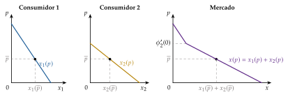
Fuente: elaboración propia a partir de Mas-Colell, Whinston y Green (1995, § 10.C).
Productores: curva de oferta individual y de mercado
Tecnología y costes: cada empresa \(j\) transforma numerario en el bien con una función de producción neoclásica \(q_j=F_j(\vec{z}_j)\) [ver tema 3.A.11]. Elige su producción en 2 etapas [ver tema 3.A.12]:
primero obtiene, para cada nivel de producción, la combinación de factores más barata, lo que da su función de costes \(C_j(\vec{w},q_j)\) y garantiza la eficiencia económica; como \(\vec{w}\) está fijo, la escribimos \(C_j(q_j)\);12
después elige la producción que maximiza el beneficio.
Supuesto sobre los costes: el coste marginal \(\mathrm{CMg}_j(q_j)=C_j'(q_j)\) es creciente en el tramo relevante (\(C_j\) convexa en él). Es lo que ocurre, por ejemplo, si la función de producción es estrictamente cóncava (rendimientos estrictamente decrecientes).13
Problema: dado el precio, la empresa elige la producción que maximiza su beneficio: \[\begin{array}{rl}\displaystyle \max_{q_j} & \displaystyle B_j=p\,q_j-C_j(q_j) \\ \text{s.a.} & q_j\geq 0\end{array} \tag{5}\]
Condición de primer orden (necesaria): con \(q_j>0\), \[p=C_j'(q_j)\equiv\mathrm{CMg}_j(q_j), \tag{6}\] y \(p\leq\mathrm{CMg}_j(0)\) si \(q_j=0\). Si \(p>\mathrm{CMg}_j\), una unidad más añade al ingreso más de lo que añade al coste; si \(p<\mathrm{CMg}_j\), conviene producir menos. Para la empresa precio-aceptante el ingreso marginal es el precio: su demanda es horizontal, a diferencia de la del monopolista [ver tema 3.A.17].
Condición de segundo orden: \(\partial^2B_j/\partial q_j^2=-C_j''(q_j)\leq 0\) (necesaria; con desigualdad estricta, suficiente): la empresa produce en el tramo creciente del coste marginal.
Posibilidad de inacción: la empresa solo produce si el precio cubre el coste medio de lo que puede evitar no produciendo; si no, prefiere \(q_j=0\). Sin costes hundidos, como en I y II, el umbral es el mínimo del coste medio (CMe); con costes hundidos (corto plazo), el del coste variable medio (CVMe, III.1).
Si \(C_j\) es estrictamente convexa y \(C_j(0)=0\), el coste medio está siempre por debajo del marginal, su ínfimo es \(\mathrm{CMg}_j(0)\) y la empresa produce a cualquier precio mayor: la oferta es continua.
Si el coste medio tiene forma de U (por ejemplo, con un coste fijo que se evita al cerrar), la empresa no produce por debajo de su mínimo, \(\overline{c}_j=\min\mathrm{CMe}_j\), alcanzado en la escala mínima eficiente \(\overline{q}_j\), y la oferta salta de 0 a \(\overline{q}_j\) en ese precio (gráfico 2). Este salto es el que pone en riesgo la existencia del equilibrio (II.1.1) y el que fija el tamaño de las empresas con libre entrada (III.3). Los casos según la forma de los costes están en el anexo B.
Oferta de la empresa, \(q_j(p)\): la inversa del tramo creciente del coste marginal por encima de ese umbral, y 0 por debajo; es no decreciente en el precio.
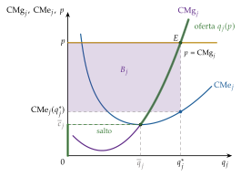
Fuente: elaboración propia a partir de Mas-Colell, Whinston y Green (1995, § 5.D) y Pérez Domínguez (2004).
Oferta de mercado: la suma horizontal de las individuales (gráfico 3, izquierda),14 \[q(p)=\sum_{j=1}^{J}q_j(p), \tag{7}\] con elasticidad-precio \(\varepsilon_S=\frac{dq}{dp}\frac{p}{q}\geq 0\). Como el número de empresas está fijo, no es perfectamente elástica.
Oferta inversa de mercado, \(p^S(q)=q^{-1}(q)\): el precio al que las empresas ofrecen en total la cantidad \(q\). Como cada una iguala su coste marginal al precio, \(p^S(q)\) es el coste marginal de la industria: lo que cuesta producir una unidad más de la forma más barata entre todas las empresas.
iii) Implicaciones: el equilibrio competitivo
Las curvas de demanda y de oferta dicen qué haría cada agente a cada precio. Falta saber qué precio se forma y qué se produce y consume: lo dice el concepto de equilibrio.
Equilibrio competitivo: una asignación \((x_1^*,\dots,x_I^*;\,q_1^*,\dots,q_J^*)\) y un precio \(p^*\) tales que
maximización de la utilidad: \(x_i^*=x_i(p^*)\) para todo consumidor (el equilibrio está sobre la curva de demanda);
maximización del beneficio: \(q_j^*=q_j(p^*)\) para toda empresa (está sobre la curva de oferta);
vaciado del mercado: lo que quieren comprar los consumidores es lo que quieren vender las empresas, \(x(p^*)=q(p^*)\).
Con soluciones interiores, las 3 condiciones son
\[\phi_i'(x_i^*)=p^*\ \ (i=1,\dots,I),\qquad p^*=\mathrm{CMg}_j(q_j^*)\ \ (j=1,\dots,J),\qquad \sum_{i=1}^{I}x_i^*=\sum_{j=1}^{J}q_j^*\tag{8}\]
y, en las esquinas, \(\phi_i'(0)\leq p^*\) si \(x_i^*=0\) y \(p^*\leq\mathrm{CMg}_j(0)\) si \(q_j^*=0\).
Interpretación: las 2 primeras condiciones dicen que cada agente hace lo mejor que puede tomando el precio como dado; la tercera, que sus planes son compatibles. Es la definición de cualquier equilibrio económico: decisiones óptimas y compatibles entre sí.
Si a un precio hubiera exceso de demanda, un comprador que no encuentra quien le venda ofrecería algo más y algún vendedor aceptaría; con exceso de oferta, un vendedor rebajaría el precio. Solo en \(p^*\) nadie tiene incentivos a cambiarlo.15
Interpretación gráfica: el equilibrio es el corte de la demanda y la oferta de mercado (gráfico 3, derecha). En él, \(p^D(x^*)=p^S(q^*)\) con \(x^*=q^*\): el beneficio marginal social de la última unidad iguala su coste marginal social, lo que anticipa su eficiencia (II.2).
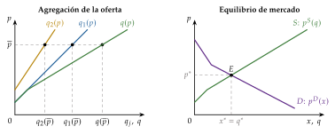
Fuente: elaboración propia a partir de Mas-Colell, Whinston y Green (1995, § 10.C).
Recapitulación: hemos obtenido la demanda de mercado (la suma de las utilidades marginales), la oferta (la suma de los costes marginales) y el equilibrio, su corte, con un número dado de empresas. Una vez obtenido el equilibrio, pasamos a estudiar sus propiedades: si existe, si es único, si el mercado llega a él y si es bueno.
II. Estudio del equilibrio competitivo: análisis positivo y normativo
Idea: una vez definido el equilibrio, lo estudiamos desde 2 puntos de vista: el positivo (¿existe, es único, lo alcanza el mercado?) y el normativo (¿es deseable?). Terminamos viendo cómo cambia ante perturbaciones y ante un impuesto.
Conclusión anticipada: con curvas continuas y de pendiente normal, el equilibrio existe y es único; su estabilidad depende del mecanismo de ajuste, y la telaraña muestra que puede no alcanzarse aun con curvas normales. Cuando se alcanza, maximiza el excedente total (1TFEB), y un impuesto se reparte según las elasticidades y destruye bienestar.
En el cante de II (12′): la existencia con el exceso de demanda y Bolzano, y su fallo con no convexidades (1′); la unicidad en una frase con el caso sin intercambio (0′30″); la estabilidad, con los ajustes walrasiano y marshalliano dibujados en los 2 primeros paneles del gráfico de estabilidad (3′) y la telaraña convergente con su condición (1′), más la evidencia y la crítica de Muth (0′30″); los excedentes con su gráfico y el 1TFEB como maximización del excedente total, que se escribe como segunda función clave junto a la del equilibrio, y el 2TFEB con transferencias de numerario (3′), y la estática comparativa con el principio de correspondencia y el impuesto: cuña, reparto según las elasticidades, ley de Dalton y triángulo de pérdida (3′). La tabla de estabilidad, el tercer panel, la telaraña divergente, los casos extremos de la incidencia y los controles de precios son de apoyo o de profundización.
II.1. Análisis positivo del equilibrio
Las 3 preguntas, cada una presupone la anterior:
existencia: ¿hay algún precio que vacíe el mercado? Si no, el modelo no describe nada;
unicidad: ¿hay solo uno? Si hay varios, el modelo no predice cuál se alcanza y la estática comparativa pierde sentido;
estabilidad: si el mercado está fuera del equilibrio, ¿lo llevan a él las fuerzas del mercado? Un equilibrio inestable es una curiosidad matemática.
II.1.1. Existencia
a) Idea
En un solo mercado la existencia se reduce a que la demanda y la oferta se corten. Basta estudiar una función, la función de exceso de demanda, \[z(p)=x(p)-q(p), \tag{9}\] positiva si a ese precio falta producto y negativa si sobra. Un equilibrio es un precio con \(z(p^*)=0\).
b) Modelo
i) Supuestos
Los de I.2: \(\phi_i\) estrictamente cóncavas y costes estrictamente convexos, de modo que la demanda es continua y decreciente y la oferta, continua y creciente.
El consumidor que más valora el bien lo valora más que el coste marginal más bajo, \(\max_i\phi_i'(0)>\min_j\mathrm{CMg}_j(0)\), y a precios muy altos la demanda queda por debajo de la oferta.
ii) Desarrollo
Con esos supuestos, \(z(p)\) es continua, positiva a precios bajos y negativa a precios altos. Por el teorema de Bolzano, entre ambos hay un precio que vacía el mercado: \[z(p')>0,\quad z(p'')<0,\quad p'<p''\ \Longrightarrow\ \exists\,p^*\in(p',p''):\ z(p^*)=0.\]
Teorema de Bolzano (Bolzano, 1817; Sydsæter et al., 2008): si una función \(f\) es continua en un intervalo cerrado \([a,b]\) y toma valores de signo contrario en sus extremos, \(f(a)\,f(b)<0\), existe al menos un \(c\in(a,b)\) con \(f(c)=0\). Es un caso particular del teorema del valor intermedio. Aplicado a \(z(p)\) en \([p',p'']\), da el equilibrio. En equilibrio general, con muchos precios, el papel de Bolzano lo hace el teorema del punto fijo de Brouwer [ver tema 3.A.21].
iii) Implicaciones
El equilibrio existe con los mismos supuestos que dan curvas de demanda y oferta continuas: la convexidad de las preferencias y de la tecnología. Si no se cumple la segunda condición de los supuestos, el equilibrio existe igualmente, pero sin intercambio (II.1.2).
c) Valoración
Cuándo falla: con no convexidades. Si la tecnología tiene rendimientos crecientes al principio, el coste medio tiene forma de U y la oferta de cada empresa salta de 0 a la escala mínima eficiente \(\overline{q}\) en el precio \(\overline{c}=\min\mathrm{CMe}\) (I.2). Con una sola empresa, si a ese precio la demanda es menor que \(\overline{q}\), oferta y demanda no se cortan: no hay equilibrio competitivo (gráfico 4).
En esos mercados no es razonable suponer empresas precio-aceptantes: son industrias con grandes costes fijos o de entrada (generación de electricidad, redes), en las que la eficiencia pide pocas empresas y, a menudo, regulación [ver tema 3.A.17] [ver tema 3.A.20].
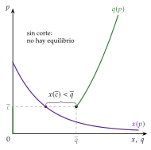
Fuente: elaboración propia a partir de Mas-Colell, Whinston y Green (1995, § 10.C y § 10.F).
II.1.2. Unicidad
Una vez que sabemos que el equilibrio existe, la pregunta siguiente es cuántos hay.
a) Idea
Que exista un equilibrio no implica que sea único. En un solo mercado, la respuesta depende de las pendientes de las curvas.
b) Modelo
i) Supuestos
Los de la existencia: demanda estrictamente decreciente y oferta no decreciente.
ii) Desarrollo
Con esas pendientes, el exceso de demanda es estrictamente decreciente donde hay intercambio y solo puede cortar el cero una vez: la asignación de equilibrio es única (Mas-Colell, Whinston y Green, 1995, § 10.C).
iii) Implicaciones
Casos de multiplicidad:
demanda insuficiente: si el consumidor que más valora el bien lo valora menos que el coste marginal más bajo, \(\max_i\phi_i'(0)<\min_j\mathrm{CMg}_j(0)\), cualquier precio entre esos 2 valores vacía el mercado con \(x^*=q^*=0\) (gráfico 5). La asignación es única, sin intercambio: lo indeterminado es el precio;
costes marginales constantes: el precio es único, \(p^*=c\), pero el reparto de la producción entre las empresas queda indeterminado (III.3);
pendientes anómalas: si la oferta de la industria es decreciente (economías externas, III.3) o la demanda creciente (un bien Giffen, imposible con utilidad cuasilineal), las curvas pueden cortarse varias veces y hay varios equilibrios, unos estables y otros no (II.1.3).
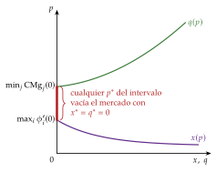
Fuente: elaboración propia a partir de Mas-Colell, Whinston y Green (1995, § 10.C).
c) Valoración
Con varios equilibrios el modelo no predice a cuál se llega y la estática comparativa pierde sentido: hace falta saber cuáles son estables. Es la pregunta siguiente.
II.1.3. Estabilidad: dinámicas de ajuste
Saber que el equilibrio existe y es único no basta: falta saber si el mercado llega a él y por qué camino. Es lo que estudian las dinámicas de ajuste, que el título de la exposición pone en primer plano.
a) Idea
Qué es: un equilibrio es estable si, cuando el mercado está fuera de él, hay fuerzas que lo empujan hacia él: precios y cantidades convergen con el tiempo al equilibrio. Se distinguen 2 grados:
estabilidad local: el equilibrio se restablece tras una perturbación pequeña, si el punto de partida está cerca;
estabilidad global: se restablece tras cualquier perturbación, desde cualquier punto de partida. La distinción importa cuando hay varios equilibrios.
Por qué importa:
sin estabilidad, la estática comparativa compara equilibrios a los que el mercado quizá no llegue. Samuelson (1941) lo formula como principio de correspondencia: las condiciones de estabilidad son las que dan signo a la estática comparativa (II.3);
si el equilibrio es estable, es un argumento a favor de la «mano invisible» de Smith: el propio mercado, sin intervención pública, tiende a él;
si no lo es, el mercado puede alejarse del equilibrio o quedarse oscilando a su alrededor, y eso puede justificar la intervención pública para reconducirlo, como en la estabilización de los precios agrarios [ver tema 3.B.38]. Para el conjunto de la economía, es la función de estabilización que Musgrave (1959) atribuye al sector público, junto a la asignación y la distribución; aquí la pregunta es más modesta: si un solo mercado vuelve a su equilibrio después de una perturbación.
3 dinámicas de ajuste, según qué variable reacciona al desequilibrio:
ajuste walrasiano (por precios): el precio sube si hay exceso de demanda y baja si hay exceso de oferta;
ajuste marshalliano (por cantidades): la producción aumenta si lo que los compradores pagarían supera lo que piden los vendedores;
modelo de la telaraña (con retardo): la producción se decide un periodo antes de conocer el precio, con una expectativa sobre él.
Conclusión anticipada: con oferta creciente y demanda decreciente, los ajustes walrasiano y marshalliano son estables; con las 2 curvas decrecientes dan resultados opuestos, y la telaraña puede oscilar sin converger aun con curvas normales. La estabilidad no es solo una propiedad de las curvas, sino de cómo se ajusta el mercado.
b) Modelo
i) Supuestos
Un solo mercado, con la demanda \(x(p)\) y la oferta \(q(p)\) de I.2 (o sus inversas, \(p^D(q)\) y \(p^S(q)\)) y su equilibrio \((q^*,p^*)\), del que una perturbación lo ha apartado.
Ajuste walrasiano: no hay intercambios fuera del equilibrio y el precio se mueve en el sentido del exceso de demanda, a una velocidad que depende de su tamaño: \(\dot p=f\big(z(p)\big)\), con \(f(0)=0\) y \(f'>0\) (con \(f\) lineal, \(\dot p=\kappa\,z(p)\), \(\kappa>0\)).16
Ajuste marshalliano: los productores llevan al mercado una cantidad \(q\) y la venden al precio de demanda \(p^D(q)\), lo que los compradores pagan por la última unidad; su precio de oferta \(p^S(q)\) es el que necesitan para producirla. La cantidad se mueve según la diferencia: \(\dot q=g\big(p^D(q)-p^S(q)\big)\), con \(g(0)=0\) y \(g'>0\). Es la regla de Marshall (1890, lib. V, cap. III, § 6): cuando el precio de demanda supera al de oferta, la cantidad producida tiende a aumentar.
ii) Desarrollo
Ajuste walrasiano (por precios). En palabras: es estable si, por encima del precio de equilibrio, sobra producto (y el precio baja) y, por debajo, falta (y el precio sube). Formalmente, \[\dot p=f\big(z(p)\big),\qquad z(p)=x(p)-q(p);\qquad \text{estable si }\ z'(p^*)=x'(p^*)-q'(p^*)<0. \tag{10}\] Linealizando alrededor del equilibrio, \(\dot p\approx f'(0)\,z'(p^*)\,(p-p^*)\), cuya solución es \(p(t)-p^*=(p_0-p^*)\,e^{f'(0)z'(p^*)\,t}\): la desviación se reduce con el tiempo si y solo si \(z'(p^*)<0\). Es globalmente estable si \(z(p)\,(p-p^*)<0\) para todo \(p\neq p^*\): entonces la distancia al equilibrio, \(\tfrac12(p-p^*)^2\), disminuye siempre.
Ajuste marshalliano (por cantidades). En palabras: es estable si, a la izquierda del equilibrio, los compradores pagan más de lo que piden los vendedores (y la producción aumenta) y, a la derecha, menos (y disminuye). Formalmente, \[\dot q=g\big(p^D(q)-p^S(q)\big);\qquad \text{estable si }\ \frac{d}{dq}\big(p^D(q)-p^S(q)\big)\Big|_{q^*}<0. \tag{11}\]
iii) Implicaciones
Cuándo coinciden: con la oferta creciente y la demanda decreciente, los 2 ajustes son estables (primera columna de la tabla 2 y primer panel del gráfico 6). Es el caso del modelo de I.2.
Cuándo difieren: si las 2 curvas tienen pendiente negativa, lo que ocurre con una oferta de la industria con economías externas (III.3) o con un bien Giffen y oferta creciente. Con \(a=dp^D/dq<0\) y \(b=dp^S/dq<0\) las pendientes en el plano \((q,p)\):
el ajuste walrasiano exige \(z'=1/a-1/b<0\), es decir, \(a>b\): la oferta, más inclinada que la demanda;
el marshalliano exige \(a-b<0\), es decir, \(a<b\): la oferta, más plana que la demanda.
Las 2 condiciones son incompatibles: lo que es estable para un ajuste es inestable para el otro (columnas segunda y tercera).
| Oferta creciente, demanda decreciente |
Ambas decrecientes, oferta más plana |
Ambas decrecientes, oferta más inclinada |
|
|---|---|---|---|
| Ajuste walrasiano (por precios) |
Estable | Inestable | Estable |
| Ajuste marshalliano (por cantidades) |
Estable | Estable | Inestable |
| Walras: estable si \(z'(p)<0\). Marshall: estable si \(\tfrac{d}{dq}(p^D-p^S)<0\) | |||
Fuente: elaboración propia a partir de Varian (1992, cap. 21).

Fuente: elaboración propia a partir de Varian (1992, cap. 21).
Cómo se lee el gráfico: cada panel está debajo de la columna de la tabla a la que corresponde, y bajo la primera columna va la leyenda. Las flechas sobre el eje de precios son el ajuste walrasiano (se mueve el precio) y las del eje de cantidades, el marshalliano (se mueve la cantidad); un ajuste es estable si sus flechas apuntan hacia el equilibrio (en verde) e inestable si se alejan (en rojo).
Interpretación: Walras piensa en mercados en los que lo que se ajusta deprisa es el precio (una subasta, una bolsa); Marshall, en productores que deciden cuánto llevar al mercado y ajustan su producción según el precio que obtienen, que es lo natural a largo plazo y cuando hay economías externas, el caso que le preocupaba.
c) Extensiones: el modelo de la telaraña
Los 2 ajustes anteriores suponen que la cantidad o el precio reaccionan en tiempo continuo. En muchos mercados, sobre todo agrarios, la producción se decide un periodo antes de conocer el precio al que se venderá: se siembra, se planta o se ceba el ganado meses antes de vender. Es el modelo de la telaraña, formalizado hacia 1930 por Ricci, Schultz y Tinbergen, al que Kaldor (1934) dio nombre (cobweb) y que Ezekiel (1938) sistematizó.
i) Supuestos
Tiempo discreto: la demanda depende del precio corriente, \(x(p_t)\), y la oferta, del precio que los productores esperaban al decidir la producción, \(q(p^e_t)\).
Expectativas ingenuas: los productores esperan el precio del periodo anterior, \(p^e_t=p_{t-1}\).17
Vaciado: cada periodo el precio se ajusta para que se venda toda la producción, \(x(p_t)=q(p^e_t)\).
ii) Desarrollo
Linealizando alrededor del equilibrio, como \(x(p^*)=q(p^*)\), \[x(p_t)=q(p^e_t),\qquad p^e_t=p_{t-1}\quad\Longrightarrow\quad p_t-p^*\simeq-\frac{q'(p^*)}{\lvert x'(p^*)\rvert}\,(p_{t-1}-p^*). \tag{12}\] Con curvas lineales es exacta y da \(p_t-p^*=\big(-q'/\lvert x'\rvert\big)^{t}(p_0-p^*)\) (anexo E).
En palabras: el signo menos hace que el precio oscile. Un precio alto lleva a producir mucho, lo que hunde el precio del periodo siguiente; ese precio bajo lleva a producir poco, lo que lo vuelve a subir, y así sucesivamente. En el plano \((q,p)\), el camino entre la oferta y la demanda dibuja una telaraña (gráfico 7).
Resultados: el factor \(q'(p^*)/\lvert x'(p^*)\rvert\) decide si las oscilaciones se amortiguan:
si \(q'(p^*)<\lvert x'(p^*)\rvert\), se amortiguan y el precio converge: telaraña convergente;
si \(q'(p^*)=\lvert x'(p^*)\rvert\), oscila siempre con la misma amplitud: telaraña continua;
si \(q'(p^*)>\lvert x'(p^*)\rvert\), las oscilaciones crecen: telaraña divergente.
Condición de convergencia, de 3 formas equivalentes:
la oferta reacciona al precio menos que la demanda;
en elasticidades medidas en el equilibrio (con \(x^*=q^*\)), \(\varepsilon_S<\lvert\varepsilon_D\rvert\), porque \(q'(p^*)/\lvert x'(p^*)\rvert=\varepsilon_S/\lvert\varepsilon_D\rvert\);
en el plano \((q,p)\), la oferta es más inclinada que la demanda.
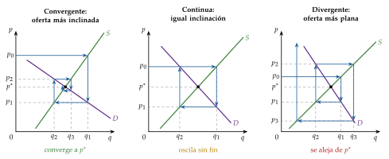
Fuente: elaboración propia a partir de Ezekiel (1938).
iii) Implicaciones
La estabilidad depende del mecanismo de ajuste y de cómo se forman las expectativas, no solo de las curvas: con oferta creciente y demanda decreciente, los ajustes walrasiano y marshalliano siempre convergen, pero la telaraña puede divergir.
Los ciclos tienen un coste: se produce demasiado en unos periodos y demasiado poco en otros, y los precios fluctúan más de lo que justifican las perturbaciones.
d) Evidencia empírica
Ezekiel (1938) usa la telaraña para explicar los ciclos de precios y producción de los mercados agrarios, como el ciclo del porcino, y los ciclos ganaderos son desde entonces su ejemplo clásico.
En el laboratorio, Hommes et al. (2007) piden a los participantes que prevean el precio de un mercado de telaraña sin conocer sus ecuaciones: cuando el equilibrio es estable con expectativas ingenuas, los precios se quedan cerca del de equilibrio; cuando es inestable, oscilan a su alrededor con una volatilidad persistente muy superior a la que habría con expectativas racionales, aunque su media se mantenga cerca.
e) Valoración
La crítica de Muth: en la telaraña los productores se equivocan siempre en el mismo sentido y no aprenden. Si un precio alto lleva siempre a uno bajo, quien lo sepa producirá pensando en el precio de equilibrio, y el ciclo desaparece. Muth (1961) parte de este mercado para proponer las expectativas racionales; la idea pasó a la macroeconomía en los años 70 (Campante, Sturzenegger y Velasco, 2021) [ver tema 3.A.6]. Con expectativas adaptativas (Nerlove, 1958), los productores corrigen solo una parte de su error y el ajuste se amortigua más [ver tema 3.A.5]. Las 2 versiones, y el ciclo límite que aparece con curvas no lineales, están en el anexo E.
Los ajustes instantáneos: el walrasiano supone que nadie intercambia fuera del equilibrio, algo poco realista salvo en subastas organizadas; el marshalliano y la telaraña describen mejor mercados en los que se produce antes de vender. En todos, el equilibrio es el punto de llegada, pero el camino importa.
Recapitulación: el equilibrio competitivo existe y es único con curvas normales, y el mercado llega a él si se ajusta por precios o por cantidades; con la producción decidida por adelantado puede oscilar, y converge si la oferta reacciona menos que la demanda. Pero que el mercado llegue al equilibrio no dice si ese equilibrio es deseable: es la pregunta del análisis normativo.
II.2. Análisis normativo. Eficiencia y bienestar en el modelo de equilibrio parcial
Una vez visto que el equilibrio existe, es único y, con curvas normales, se alcanza, pasamos a valorarlo: ¿es deseable la asignación a la que llega el mercado? Es la pregunta de la economía del bienestar [ver tema 3.A.22].
II.2.1. Optimalidad de Pareto: los excedentes
Antecedente: Walras (1874, lección 44) sostenía que los economistas habían afirmado el laisser-faire más que demostrarlo, y que la libre competencia procura, «dentro de ciertos límites», el máximo de utilidad. De ahí deducía que había que suprimir, en lo posible, lo que estorba a la competencia, con excepciones como los servicios de interés público y los monopolios naturales, y que el principio deja abierta la cuestión de la justicia del reparto.
Óptimo de Pareto: una asignación factible es eficiente en el sentido de Pareto (1906) si no hay otra factible en la que alguien mejore sin que nadie empeore. Es un criterio:
mínimo y poco discutible (no desperdiciar recursos);
ordinal (no exige comparar utilidades);
incompleto: no elige entre asignaciones eficientes con distinto reparto [ver tema 3.A.24].
En equilibrio parcial con utilidad cuasilineal, la eficiencia se estudia con los excedentes, medidos en numerario (gráfico 8):
excedente del consumidor (EC): lo que los consumidores estarían dispuestos a pagar menos lo que pagan; el área bajo la demanda y sobre el precio.18 Con utilidad cuasilineal es una medida exacta del bienestar: su variación coincide con las variaciones compensatoria y equivalente [ver tema 3.A.9];
excedente del productor (EP): lo que cobran las empresas menos el mínimo que aceptarían por cada unidad, su coste marginal; el área sobre la oferta y bajo el precio. Es el beneficio antes de descontar los costes fijos;19
excedente total (ET): su suma, la ganancia neta de producir y consumir el bien: \[\mathrm{EC}=\int_0^{x^*}p^D(x)\,dx-p^*x^*,\qquad \mathrm{EP}=p^*q^*-\int_0^{q^*}p^S(q)\,dq,\qquad \mathrm{ET}=\mathrm{EC}+\mathrm{EP}. \tag{13}\]
Por qué basta con el excedente total: con utilidad cuasilineal el numerario pasa de un agente a otro uno a uno, de modo que la frontera de posibilidades de utilidad es una recta de pendiente \(-1\). Una asignación es óptima en el sentido de Pareto si y solo si maximiza el excedente total, y los óptimos solo se distinguen por el reparto del numerario (Mas-Colell, Whinston y Green, 1995, § 10.D) (anexo A).20
Resultado: como \(\mathrm{ET}(x)=\int_0^{x}\big(p^D(s)-p^S(s)\big)\,ds\), derivando, \(\mathrm{ET}'(x)=p^D(x)-p^S(x)=0\). El excedente total es máximo en la cantidad en que el beneficio marginal social iguala al coste marginal social, \(p^D(x^*)=\mathrm{CMg}(q^*)\) con \(x^*=q^*\), que es la del equilibrio competitivo (I.2). Además, cada unidad la consumen quienes más la valoran y la producen quienes menos coste tienen.
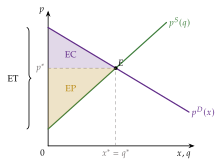
Fuente: elaboración propia a partir de Mas-Colell, Whinston y Green (1995, § 10.D).
II.2.2. Teoremas fundamentales de la economía del bienestar
Con el criterio de Pareto ya podemos preguntar si el equilibrio competitivo es eficiente y, al revés, si cualquier asignación eficiente puede alcanzarse con el mercado. Responden los 2 teoremas fundamentales de la economía del bienestar, aquí en su versión de equilibrio parcial.21
Primer teorema fundamental de la economía del bienestar (1TFEB)
Enunciado: si todos los agentes son precio-aceptantes, hay un mercado para cada bien (sin externalidades ni bienes públicos) y todos se enfrentan al mismo precio (sin impuestos), la asignación de un equilibrio competitivo es óptima en el sentido de Pareto.
Demostración en equilibrio parcial: buscamos las cantidades que maximizan el excedente total, sujetas a que se consuma lo que se produce:
\[\begin{array}{rl}\displaystyle \max_{(x_i)_i,\,(q_j)_j} & \displaystyle \sum_{i=1}^{I}\phi_i(x_i)-\sum_{j=1}^{J}C_j(q_j) \\ \text{s.a.} & \sum_{i=1}^{I}x_i=\sum_{j=1}^{J}q_j \\ & x_i\geq 0,\ q_j\geq 0\end{array}\tag{14}\]
Sus condiciones de primer orden, con el multiplicador \(\lambda\) de la restricción, para todo consumidor que compra y toda empresa que produce, son \[\phi_i'(x_i)=\lambda\ \ \text{si }x_i>0,\qquad \mathrm{CMg}_j(q_j)=\lambda\ \ \text{si }q_j>0,\qquad \sum_ix_i=\sum_jq_j. \tag{15}\]
El multiplicador \(\lambda\) es el precio sombra del bien: lo que vale para la sociedad una unidad más. Las condiciones (15) son exactamente las del equilibrio competitivo (8) con \(\lambda^*=p^*\): el equilibrio maximiza el excedente total y, con cualquier reparto del numerario, es un óptimo de Pareto (demostración paso a paso, en el anexo A).∎
Supuestos: los 3 del enunciado y la no saciedad local de las preferencias, que aquí asegura el numerario. No hace falta la convexidad (los rendimientos no crecientes son un supuesto de la existencia, no del teorema: el equilibrio con libre entrada y costes en U también es eficiente, III.3), ni la forma cuasilineal, que solo simplifica la medida del bienestar. Cuando falla alguno de los 3, el equilibrio deja de ser eficiente:22
con poder de mercado, el precio supera al coste marginal [ver tema 3.A.17];
con externalidades o bienes públicos, el coste o el beneficio marginal privado no es el social [ver tema 3.A.23];
con un impuesto, el precio del consumidor se separa del precio del productor (II.3.2).
Interpretación: es la expresión formal de la «mano invisible» de Smith [ver tema 3.A.2]: los precios son señales de escasez que coordinan decisiones descentralizadas sin que nadie tenga que conocer las preferencias ni las tecnologías de los demás. Es un resultado robusto, que no depende de la forma cuasilineal de las preferencias.
Segundo teorema fundamental de la economía del bienestar (2TFEB)
Enunciado: cualquier asignación óptima en el sentido de Pareto puede alcanzarse como equilibrio competitivo tras unas transferencias de suma fija adecuadas entre los consumidores.
En equilibrio parcial es inmediato: todos los óptimos tienen las mismas cantidades del bien, las que maximizan el excedente total, y solo se distinguen por el reparto del numerario. Basta, pues, con redistribuir numerario con transferencias de suma fija, que no cambian ni la demanda (no hay efecto renta) ni la oferta, y dejar que el mercado funcione (Mas-Colell, Whinston y Green, 1995, § 10.D).
En general exige más que el 1TFEB: preferencias y tecnologías convexas, y su demostración usa el teorema del hiperplano separador [ver tema 3.A.22]. En el modelo cuasilineal la convexidad de las preferencias la asegura la concavidad de las \(\phi_i\).
Por qué importa: separa eficiencia y equidad. La redistribución puede hacerse con transferencias de suma fija, sin alterar los precios.
Recapitulación: el equilibrio competitivo maximiza el excedente total y cualquier reparto eficiente puede alcanzarse sin tocar los precios. Sabemos que el equilibrio es eficiente; falta ver cómo cambia cuando cambian los datos del mercado.
II.3. Análisis de estática comparativa
Idea: la estática comparativa compara el equilibrio antes y después de un cambio en los datos del mercado (preferencias, costes, impuestos). Permite predecir los efectos de una perturbación o de una medida y comparar mercados parecidos.
Método: si un parámetro \(\alpha\) desplaza la demanda o la oferta, el precio de equilibrio cumple \(z\big(p^*(\alpha);\alpha\big)=0\) para todo \(\alpha\), y derivando, \[\frac{dp^*}{d\alpha}=-\frac{\partial z/\partial\alpha}{z'(p^*)}. \tag{16}\] Si el equilibrio es estable con el ajuste walrasiano, \(z'(p^*)<0\) (II.1.3), y el precio sube cuando el cambio aumenta el exceso de demanda: la condición de estabilidad da el signo del resultado. Es el principio de correspondencia (Samuelson, 1941, 1947).
La demanda se desplaza con las preferencias; la oferta, con la tecnología o los precios de los factores.23 Los impuestos separan el precio que pagan unos del que reciben otros.
II.3.1. Cambios en las preferencias y en la tecnología
Preferencias: con \(\phi_i(x_i;\alpha)\) y \(\partial\phi_i'/\partial\alpha>0\) (por ejemplo, el calor y los helados), un aumento de \(\alpha\) desplaza la demanda hacia arriba: suben el precio y la cantidad (gráfico 9, izquierda).
Normativamente, el excedente del productor aumenta (vende más y más caro). El del consumidor puede subir o bajar: paga más por las unidades que ya compraba, pero valora más el bien y compra unidades nuevas; depende de las pendientes de las curvas y de cómo se desplace la demanda. El excedente total, medido con las nuevas preferencias, aumenta.
Tecnología: con \(C_j(q_j;\alpha)\) y \(\partial\mathrm{CMg}_j/\partial\alpha<0\) (progreso técnico, recursos nuevos), un aumento de \(\alpha\) desplaza la curva de oferta hacia abajo (a la derecha): a cada precio se ofrece más cantidad, y baja el precio y sube la cantidad (gráfico 9, derecha).
Normativamente, el excedente del consumidor aumenta (compra más y más barato). El del productor puede subir o bajar: cobra menos por cada unidad, pero vende más y con menor coste; depende de nuevo de las pendientes. El excedente total aumenta.
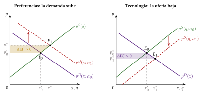
Fuente: elaboración propia a partir de Mas-Colell, Whinston y Green (1995, § 10.C).
II.3.2. Introducción de un impuesto
Una vez vistos los cambios en los datos del mercado, pasamos a la medida de política económica más estudiada con este modelo: un impuesto.
a) Idea
Un impuesto separa el precio que pagan los consumidores, \(p_c\), del que reciben los vendedores, \(p_v\). ¿Quién lo soporta de verdad y cuánto bienestar destruye?
b) Modelo
i) Supuestos
Un impuesto unitario \(t>0\) por unidad vendida, que abre una cuña fiscal \(p_c=p_v+t\); las preferencias y los costes no cambian.
ii) Desarrollo
Incidencia legal y económica: da igual sobre quién recaiga legalmente. Si lo pagan los consumidores, su demanda pasa a ser \(x(p_v+t)\); si lo pagan los vendedores, su oferta es \(q(p_c-t)\). En los 2 casos el equilibrio cumple \[x(p_v+t)=q(p_v),\qquad p_c=p_v+t, \tag{17}\] y los precios, la cantidad y la recaudación son los mismos (Mas-Colell, Whinston y Green, 1995, § 10.C).
Reparto del impuesto: derivando (17) respecto a \(t\), \(x'\,(dp_v/dt+1)=q'\,dp_v/dt\), y con las elasticidades en el equilibrio inicial (\(\varepsilon_D<0\) con su signo), \[\frac{dp_v}{dt}=\frac{x'(p_c)}{q'(p_v)-x'(p_c)}=-\frac{\lvert\varepsilon_D\rvert}{\varepsilon_S+\lvert\varepsilon_D\rvert},\qquad \frac{dp_c}{dt}=1+\frac{dp_v}{dt}=\frac{\varepsilon_S}{\varepsilon_S+\lvert\varepsilon_D\rvert}. \tag{18}\]
El precio del consumidor sube, el del vendedor baja y la cantidad cae, todos débilmente, y ninguno de los 2 precios se mueve más que el impuesto: el impuesto se traslada en parte, y lo pagan los 2 lados del mercado (gráfico 10).
La parte de los consumidores es \(dp_c/dt\) y la de los vendedores, \(-dp_v/dt\); suman 1. Dalton (1922) lo enuncia así: la incidencia se reparte entre compradores y vendedores en la razón de la elasticidad de la oferta a la de la demanda. Es la ley de Dalton: el impuesto recae más sobre el lado más inelástico del mercado. Cuanto más elástica es la oferta, menos baja el precio del vendedor y más lo soportan los consumidores.24
Casos extremos: con la demanda perfectamente inelástica o la oferta perfectamente elástica (a largo plazo, con libre entrada y costes constantes, III.3), lo soportan por entero los consumidores; con la demanda perfectamente elástica o la oferta perfectamente inelástica (un factor fijo, como el suelo), los vendedores.
Unitario y ad valorem: con un impuesto ad valorem de tipo \(t\) sobre el precio de venta, \(p_c=(1+t)\,p_v\). En competencia perfecta, para cada impuesto ad valorem hay uno unitario con el mismo equilibrio (el que recauda \(t\,p_v^*\) por unidad), y el análisis es el mismo.
iii) Implicaciones
Análisis normativo: la recaudación es \(T=t\,x^*(t)\). Los consumidores pierden excedente porque pagan más y compran menos, y los productores, porque cobran menos y venden menos. La recaudación compensa parte de esas pérdidas, pero no todas: el impuesto impide transacciones que valían más de lo que costaban, las que habría entre la cantidad con impuesto y sin él. Esa pérdida neta es la pérdida irrecuperable de eficiencia o exceso de gravamen (EG), el triángulo de Harberger (1964): \[\mathrm{EG}=-\Delta\mathrm{EC}-\Delta\mathrm{EP}-T\approx\tfrac12\,t\,\lvert\Delta x\rvert=\tfrac12\,t^2\,\frac{x^*}{p^*}\,\frac{\varepsilon_S\,\lvert\varepsilon_D\rvert}{\varepsilon_S+\lvert\varepsilon_D\rvert}\geq 0. \tag{19}\]
Crece con el cuadrado del impuesto y con las elasticidades: un impuesto destruye poco bienestar si recae sobre un mercado inelástico [ver tema 4.B.9].
El impuesto es distorsionante porque cambia el precio del bien en relación con el numerario y, con él, las decisiones de consumidores y empresas; lo es aunque la recaudación se devuelva después a los consumidores como transferencia.
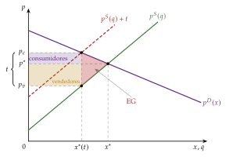
Fuente: elaboración propia a partir de Mas-Colell, Whinston y Green (1995, § 10.C).
Si el tribunal pregunta por la intervención en los precios, los precios máximos y mínimos son un buen ejemplo de estática comparativa normativa: con un precio máximo por debajo del de equilibrio se intercambia solo lo que ofrecen las empresas, hay exceso de demanda y, además de un triángulo de pérdida como el del impuesto, el racionamiento puede dejar el bien en manos de quienes no lo valoran más (anexo C).
Recapitulación: el equilibrio existe, es único y, con un buen mecanismo de ajuste, se alcanza; es eficiente, y un impuesto se reparte según las elasticidades y destruye un triángulo de excedente. Hasta aquí el número de empresas estaba fijo y todos los factores eran variables. Pasamos a ver qué cambia con el plazo, cuando las empresas ajustan su capacidad y pueden entrar o salir del mercado.
III. Análisis de plazos: corto plazo, largo plazo y libre entrada
Idea: hasta aquí el número de empresas estaba fijo y todos los factores eran variables: era, en realidad, el largo plazo sin libre entrada. Ahora vemos qué cambia con el tiempo de que disponen las empresas para ajustarse. ¿Cuánto duran los beneficios extraordinarios y qué precio rige a largo plazo?
Conclusión anticipada: a corto plazo la oferta es más rígida y puede haber beneficios o pérdidas; a largo plazo, con libre entrada, el precio baja al mínimo del coste medio y el beneficio extraordinario desaparece, y la oferta de la industria es horizontal si los costes de las empresas no dependen del tamaño de la industria, creciente con deseconomías externas y decreciente con economías externas.
En el cante de III (6′): los 3 plazos de la tabla, con el ejemplo del aceite del enganche (1′); el corto plazo con el mínimo de explotación y la oferta sobre el mínimo del CVMe (1′30″); el largo plazo sin libre entrada en una frase, con Le Chatelier-Samuelson (0′30″), y la libre entrada: definición del equilibrio, caso del coste medio en U con \(J^*=x(\overline{c})/\overline{q}\) y el paso del corto al largo plazo con su gráfico, que se queda en la pizarra hasta el final, más la oferta de la industria con costes constantes, crecientes y decrecientes, de palabra (3′). Los casos de rendimientos constantes y decrecientes, el número entero de empresas, la caja del beneficio económico y la del mercado de pescado de Marshall son de profundización. La de Marshall es un antecedente histórico con otra terminología (periodo de mercado, valor normal): conviene no mezclarla con la de los plazos del tema.
Los plazos (Mas-Colell, Whinston y Green, 1995, § 10.F): el plazo no es un tiempo de calendario, sino el tiempo de que disponen las empresas para ajustarse, y se define por lo que pueden cambiar (tabla 3):
a corto plazo, algún factor está fijo y el número de empresas también: cada empresa ajusta su producción con el equipo que tiene (más o menos cuidados y jornales en los olivares existentes);
a largo plazo sin libre entrada, todos los factores son variables, pero el número de empresas está dado: cada empresa ajusta su propio equipo a la demanda que espera (más olivos o una almazara mayor en las explotaciones que ya existen);
a largo plazo con libre entrada, el número de empresas es endógeno: entran empresas si hay beneficios y salen si hay pérdidas (olivares nuevos, que tardan años en dar fruto).
| Plazo | Factores | Número de empresas | Oferta de la empresa | Beneficio en equilibrio |
|---|---|---|---|---|
| Corto plazo | alguno fijo (coste hundido) |
fijo, \(J\) | \(p=\mathrm{CMg}_j\) si \(p\geq\min\mathrm{CVMe}_j\) |
positivo, nulo o negativo (pérdida \(\leq\mathrm{CF}_j\)) |
| Largo plazo sin libre entrada | todos variables | fijo, \(J\) | \(p=\mathrm{CMg}_j\) si \(p\geq\min\mathrm{CMe}_j\) |
no negativo |
| Largo plazo con libre entrada | todos variables | endógeno, \(J^*\) | \(p=\mathrm{CMg}=\min\mathrm{CMe}\) | nulo |
| Cuanto más largo el plazo, más elástica la oferta (Le Chatelier-Samuelson): \(\partial q^{\mathrm{LP}}/\partial p\geq\partial q^{\mathrm{CP}}/\partial p\geq 0\) | ||||
Fuente: elaboración propia a partir de Mas-Colell, Whinston y Green (1995, § 10.F).
Antecedente histórico: los periodos de Marshall y su mercado de pescado. Marshall (1890, lib. V, cap. V) ya distinguía los plazos por el tiempo de que disponen los agentes para ajustarse, pero con otra terminología, que no coincide con la de la tabla 3:
en el periodo de mercado la cantidad está dada (el pescado ya está en la lonja) y la oferta es vertical;
a corto plazo se ajusta la producción con el equipo que se tiene;
a largo plazo se ajustan el equipo y el número de empresas a la vez, y el precio tiende a su valor normal.
Su ejemplo del pescado lo ilustra (gráfico 11).
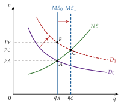
Fuente: elaboración propia a partir de De Vroey (2016, fig. 1.1) y Marshall (1890, lib. V, cap. V).
Se parte del equilibrio \(A\), en el que la demanda inicial corta a la oferta normal (\(NS\), lo que se ofrecería a cada precio si hubiera tiempo de ajustar la flota), creciente en el gráfico. La oferta de cada día (\(MS\)) es vertical: el pescado es perecedero y no puede guardarse.
Si la demanda aumenta (en el ejemplo de Marshall, porque una epidemia del ganado encarece la carne), al principio la cantidad no cambia y el precio sube hasta vaciar el mercado (\(B\)): es el equilibrio temporal, y los pescadores obtienen cuasirrentas.25
Con tiempo salen más barcos, la cantidad de cada día aumenta y el mercado se mueve hacia \(C\), el equilibrio normal, el «estado de reposo» hacia el que gravita. Si la pesca tuviera rendimientos crecientes y los caladeros no se agotasen, Marshall admite incluso que el precio normal acabe por debajo del inicial: una oferta normal decreciente, como la de la industria de costes decrecientes de III.3 (Marshall, 1890, lib. V, cap. V, § 4).
El precio vacía el mercado cada día, también durante el ajuste: no quedan peces sin vender salvo que se fije el precio por ley (con un precio mínimo por encima del de equilibrio sobraría pescado y mandaría el lado corto, la demanda). En el mercado de un bien, este análisis no deja sitio a recursos ociosos persistentes; si puede haberlos en el conjunto de la economía es la discusión que abrirá Keynes [ver tema 3.A.4].
III.1. Corto plazo
Empezamos por el corto plazo: el de las empresas que ya están en el mercado y no pueden cambiar su equipo.
i) Supuestos
El número de empresas, \(J\), está fijo y cada una tiene algún factor fijo cuyo coste es hundido: se paga aunque no se produzca. Su función de costes es \[C_j(q_j)=\mathrm{CF}_j+\mathrm{CV}_j(q_j)\quad\text{para todo }q_j\geq 0,\qquad \mathrm{CV}_j(0)=0, \tag{20}\] con \(\mathrm{CV}_j\) creciente y, en el tramo relevante, convexa (Mas-Colell, Whinston y Green, 1995, § 10.F). Los costes variables tienen forma de S invertida por la ley de proporciones variables: el coste marginal primero baja y después sube [ver tema 3.A.11] [ver tema 3.A.12].
ii) Desarrollo
Decisión: el coste fijo no depende de lo que se haga y no influye en la decisión.26 La empresa produce donde \(p=\mathrm{CMg}_j\), en el tramo creciente, siempre que el precio cubra el coste variable medio, es decir, que los ingresos cubran al menos los costes que puede evitar:
por debajo del mínimo del CVMe, el mínimo de explotación, cierra: produciendo perdería más que el coste fijo;
entre ese mínimo y el del coste medio, el óptimo de explotación, sigue produciendo con pérdidas, menores que el coste fijo;
por encima del óptimo de explotación obtiene beneficios [ver tema 3.A.12].
Oferta a corto plazo: la de la empresa es el coste marginal por encima del mínimo del CVMe (gráfico 12); la de la industria, \(q^{\mathrm{CP}}(p)=\sum_{j=1}^{J}q_j^{\mathrm{CP}}(p)\), su suma horizontal.
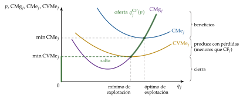
Fuente: elaboración propia a partir de Mas-Colell, Whinston y Green (1995, § 10.F).
iii) Implicaciones
Equilibrio a corto plazo: el corte de la demanda con la oferta de corto plazo de las empresas existentes. Puede dejar:
beneficios, que atraerán empresas cuando puedan entrar;
beneficio nulo;
pérdidas, que llevarán a algunas a salir cuando puedan liquidar sus factores fijos.
Rigidez: como hay un factor que no puede ajustarse, la oferta a corto plazo es más rígida que la de largo plazo, y un aumento de la demanda se traduce sobre todo en precio: es la ganancia de quien tenía aceite en plena sequía, la de los pescadores del refrán.
Coste económico y beneficio económico. El coste económico de un factor es su coste de oportunidad: el valor de la mejor alternativa a la que se renuncia al usarlo. Si la empresa no tiene el factor, es su precio de compra o alquiler; si ya lo tiene, el precio al que podría venderlo o alquilarlo [ver tema 3.A.12]. El coste contable solo recoge los pagos efectivos, de modo que el beneficio económico es el contable menos el coste de oportunidad de los recursos propios (tabla 4). Cuando la teoría dice que el beneficio es nulo a largo plazo (III.3), se refiere al económico: la empresa gana lo mismo que ganaría en su mejor alternativa.
| Situación 1 | Situación 2 | Situación 3 | |
|---|---|---|---|
| Ingresos | 1.000 | 1.000 | 1.000 |
| Costes explícitos | 600 | 600 | 600 |
| Beneficio contable | 400 | 400 | 400 |
| Coste de oportunidad de los recursos propios | 300 | 400 | 550 |
| Beneficio económico | 100 extraordinario |
0 normal |
\(-150\) pérdida económica |
Fuente: elaboración propia (ejemplo numérico).
III.2. Largo plazo sin libre entrada
Una vez visto el corto plazo, damos a las empresas tiempo para ajustar todos sus factores, pero no dejamos todavía que entren otras.
i) Supuestos
ii) Desarrollo
La empresa produce donde \(p=\mathrm{CMg}_j\) si el precio cubre el mínimo del coste medio; si no, deja de producir (I.2).
Su oferta es más elástica que a corto plazo. Lo explica el principio de Le Chatelier-Samuelson: cuantas más restricciones tiene la empresa, menos responde a los precios, de modo que a largo plazo, con todos los factores libres, la oferta responde más que con uno fijo, \(\partial q^{\mathrm{LP}}_j/\partial p\geq\partial q^{\mathrm{CP}}_j/\partial p\geq 0\) (Samuelson, 1947, cap. III; Le Chatelier, 1884) [ver tema 3.A.12].
iii) Implicaciones
En equilibrio el beneficio es no negativo y puede ser positivo y duradero. Ese beneficio extraordinario solo desaparece si pueden entrar otras empresas: es la idea de Clark (1899), para quien el beneficio es un fenómeno dinámico, ligado a los cambios de la economía, que la competencia elimina en el estado estacionario, y la de las cuasirrentas de Marshall (1890, lib. V, caps. VIII y IX), ganancias de los factores que no pueden ajustarse a corto plazo. Si la entrada está cerrada, lo que perdura es una renta del recurso que la limita, no un beneficio que vaya a desaparecer.
III.3. Largo plazo con libre entrada
Queda el último paso: dejar que entren y salgan empresas.
a) Idea
Hasta ahora el conjunto de empresas estaba dado. A largo plazo hay un número ilimitado de empresas potenciales con acceso a la misma tecnología, que entran si esperan beneficios y salen si tienen pérdidas: es la libre entrada, el supuesto 5 de la competencia perfecta (tabla 1) y una aproximación razonable cuando se piensa en plazos largos. El número de empresas activas pasa a ser endógeno. ¿Qué precio rige entonces, y cuántas empresas hay?
b) Modelo
i) Supuestos
Infinitas empresas potenciales con la misma función de costes \(C(q)\), sin costes hundidos: \(C(0)=0\), de modo que quien no entra no paga nada y ninguna tiene por qué incurrir en pérdidas.
La demanda de mercado \(x(p)\), decreciente, como hasta ahora.
Como todas tienen la misma tecnología, basta con estudiar equilibrios en los que las \(J\) empresas activas producen lo mismo, \(q\), de modo que la producción total es \(J\,q\).27
ii) Desarrollo
Equilibrio a largo plazo con libre entrada (Mas-Colell, Whinston y Green, 1995, § 10.F): un precio \(p^*\), una producción por empresa \(q^*\) y un número entero de empresas activas \(J^*\) tales que
maximización del beneficio: \(q^*\) maximiza \(p^*q-C(q)\);
vaciado del mercado: \(x(p^*)=J^*q^*\);
libre entrada: \(p^*q^*-C(q^*)=0\): si el beneficio fuera positivo entrarían más empresas, y si fuera negativo, saldrían.
La tercera condición es la nueva: es la ecuación que determina la nueva incógnita, el número de empresas. Con una solución interior, la primera y la tercera dicen que el precio iguala a la vez el coste marginal y el coste medio, lo que solo ocurre en el mínimo del coste medio: \[p^*=\mathrm{CMg}(q^*)=\mathrm{CMe}(q^*)=\min_q\mathrm{CMe}(q). \tag{21}\]
Oferta de la industria a largo plazo, \(q^{\mathrm{LP}}(p)\):
si a un precio el beneficio máximo es positivo, entran empresas sin límite y \(q^{\mathrm{LP}}(p)=\infty\);
si es negativo, ninguna produce y \(q^{\mathrm{LP}}(p)=0\);
si es nulo, cualquier cantidad que puedan producir las empresas activas con beneficio nulo.
El resultado depende de los rendimientos a escala de la tecnología (gráfico 13):
Rendimientos constantes, \(C(q)=c\,q\): el beneficio es \((p-c)\,q\).
Para que la maximización del beneficio tenga solución hace falta \(p^*\leq c\): con \(p>c\) cualquier empresa querría producir sin límite. Si \(x(c)>0\), el vaciado exige producir algo, lo que solo ocurre con \(p^*=c\), con beneficio nulo.28
La oferta a largo plazo es horizontal en \(c\) y se intercambia \(x(c)\), pero el número de empresas y lo que produce cada una quedan indeterminados: sirve cualquier par con \(J^*q^*=x(c)\). La oferta de cada empresa y la de la industria son las 2 horizontales en \(c\), pero no son la misma curva: la industria puede ofrecer cualquier cantidad sumando empresas.
Rendimientos decrecientes en todo el dominio, \(C\) estrictamente convexa con \(C(0)=0\): el coste medio está siempre por debajo del marginal y su ínfimo es \(\mathrm{CMg}(0)\), al que se acerca la empresa cuanto menos produce. Con \(p>\mathrm{CMg}(0)\), una empresa que produzca muy poco tiene beneficios y entrarían infinitas: \(q^{\mathrm{LP}}(p)=\infty\); con \(p\leq\mathrm{CMg}(0)\), nadie produce: \(q^{\mathrm{LP}}(p)=0\). Si \(x\big(\mathrm{CMg}(0)\big)>0\), la oferta y la demanda no se cortan: no hay equilibrio.29
Rendimientos crecientes en todo el dominio: la maximización del beneficio no tiene solución y no hay equilibrio competitivo, ni a corto ni a largo plazo: es el terreno del monopolio natural [ver tema 3.A.17].
Rendimientos crecientes y después decrecientes (coste medio en U): el coste medio alcanza su mínimo, \(\overline{c}=C(\overline{q})/\overline{q}=\min_qC(q)/q\), en una escala mínima eficiente \(\overline{q}>0\).30 Con \(p>\overline{c}\) hay beneficios y entran empresas; con \(p<\overline{c}\) todas pierden y salen. Por eso
\[p^*=\overline{c}=\min\mathrm{CMe},\qquad q^*=\overline{q},\qquad J^*=\frac{x(\overline{c})}{\overline{q}}\tag{22}\]
El precio y la cantidad total son los del caso de rendimientos constantes con coste \(\overline{c}\), pero ahora el tamaño de cada empresa y su número están determinados: cuanto mayor es la escala mínima eficiente respecto a la demanda, menos empresas caben.
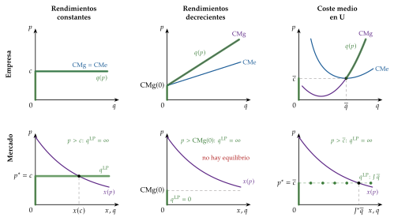
Fuente: elaboración propia a partir de Mas-Colell, Whinston y Green (1995, § 10.F).
iii) Implicaciones
Beneficio económico nulo: la libre entrada elimina los beneficios extraordinarios; la ganancia de los pescadores del refrán dura lo que tardan en entrar nuevos productores. Es nulo el beneficio económico: las empresas siguen cubriendo el coste de oportunidad de sus recursos (tabla 4).
Eficiencia productiva: cada empresa produce en su escala mínima eficiente, donde \(p=\mathrm{CMg}=\mathrm{CMe}\); no hay capacidad ociosa y los consumidores pagan el menor precio que cubre los costes. La tecnología puede tener economías de escala al principio, pero la empresa competitiva no produce nunca en ese tramo: allí \(\mathrm{CMg}<\mathrm{CMe}\) y, con \(p=\mathrm{CMg}\), tendría pérdidas.
Eficiencia asignativa: cuando el equilibrio existe, maximiza el excedente total, \(\max_x\int_0^xp^D(s)\,ds-\overline{c}\,x\), porque produce cada unidad al menor coste posible: es un ejemplo más del 1TFEB, que vale aunque la tecnología no sea convexa (II.2.2).
Del corto al largo plazo (gráfico 14): se parte de un equilibrio a largo plazo con \(J_0\) empresas en la escala mínima eficiente y precio \(\overline{c}\) (punto \(A\)), y aumenta la demanda de \(D_0\) a \(D_1\).
A corto plazo, con las mismas \(J_0\) empresas y sus costes fijos hundidos, el precio sube a lo largo de la oferta de corto plazo de la industria hasta \(p_1>\overline{c}\) (punto \(B\)); cada empresa produce \(q_1>\overline{q}\) y obtiene beneficios.
A largo plazo, esos beneficios atraen empresas, que desplazan la oferta de corto plazo a la derecha hasta que el precio vuelve a \(\overline{c}\), con \(J_1>J_0\) empresas que producen de nuevo \(\overline{q}\) (punto \(C\)) (Mas-Colell, Whinston y Green, 1995, § 10.F).
El precio reacciona más a corto plazo, y la cantidad, más a largo plazo; con costes constantes, a largo plazo todo el ajuste es en cantidades. Es la respuesta a la pregunta del enganche: la ganancia de quien vende en la escasez dura lo que tarda la oferta en ajustarse.
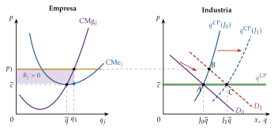
Fuente: elaboración propia a partir de Mas-Colell, Whinston y Green (1995, § 10.F).
3 matices (Mas-Colell, Whinston y Green, 1995, § 10.F):
si la escala mínima eficiente es grande respecto al mercado, caben pocas empresas, el supuesto de precio-aceptación deja de ser razonable y conviene un modelo con poder de mercado [ver tema 3.A.19];
el número de empresas tiene que ser entero: si \(x(\overline{c})/\overline{q}\) no lo es, no hay equilibrio en sentido estricto. El problema pierde importancia si \(\overline{q}\) es pequeña respecto al mercado, y un oligopolio con muchas empresas da un precio aproximadamente igual a \(\overline{c}\);
la oferta de la industria a largo plazo solo es horizontal en \(\overline{c}\) si los costes de cada empresa no dependen de cuántas haya: es lo que relaja la extensión siguiente.
c) Extensiones: la oferta de la industria a largo plazo
Hasta aquí, los precios de los factores y la tecnología de cada empresa no dependían de cuánto produjera la industria: es una industria de costes constantes, cuya oferta a largo plazo es horizontal en \(\overline{c}\), y un aumento de la demanda se atiende entero con empresas nuevas, sin cambiar el precio. Levantamos ahora ese supuesto.
i) Supuestos
Marshall (1890, lib. IV, caps. IX-XIII) distingue de las economías internas, que dependen del tamaño de cada empresa, las economías externas, que dependen del tamaño de la industria. El coste de cada empresa depende entonces también de la producción total de la industria, \(q\): \(C(q_j;\,q)\). Son externas a la empresa, que sigue siendo pequeña y precio-aceptante, e internas a la industria.
Pueden ser de 2 tipos (Viner, 1931; Scitovsky, 1954):
pecuniarias, a través de los precios de los factores: si la oferta de un factor específico de la industria no es perfectamente elástica, al crecer la industria sube su precio (deseconomía); si su producción tiene economías de escala, baja;
tecnológicas, que cambian la propia función de producción de cada empresa: un mercado de trabajo especializado, proveedores especializados y la difusión de conocimientos entre empresas cercanas, los distritos industriales de Marshall.
ii) Desarrollo
La oferta a largo plazo de la industria une los equilibrios a largo plazo, \(p=\min_{q_j}\mathrm{CMe}(q_j;\,q)\), que corresponden a cada nivel de demanda (gráfico 15: en cada panel, tras un aumento de la demanda, el mercado pasa del equilibrio inicial \(A\) al de corto plazo \(B\), con las empresas existentes, y al de largo plazo \(C\), cuando la entrada desplaza la oferta de corto plazo; la oferta a largo plazo une \(A\) y \(C\)):
industria de costes constantes: el mínimo del coste medio no cambia al entrar empresas, y la oferta a largo plazo es horizontal;
industria de costes crecientes (deseconomías externas): al entrar empresas sube el coste de todas, y la oferta a largo plazo es creciente, aunque más elástica que la de corto plazo. Es lo habitual si la industria usa factores escasos, como el suelo o el trabajo muy especializado;
industria de costes decrecientes (economías externas): al crecer la industria baja el coste de todas, y la oferta a largo plazo es decreciente: un aumento duradero de la demanda acaba abaratando el bien, como admitía Marshall para el pescado.
La oferta decreciente de la industria no contradice la competencia: cada empresa sigue teniendo su coste marginal creciente y produce en el mínimo de su coste medio; lo que baja con la entrada es toda la curva de costes de cada una. Una empresa con rendimientos crecientes internos en todo el dominio, en cambio, no es compatible con la competencia perfecta (III.3, b).
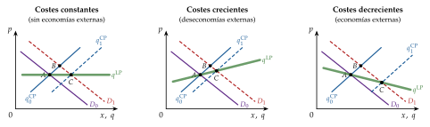
Fuente: elaboración propia a partir de Marshall (1890, lib. IV) y Viner (1931).
iii) Implicaciones
Con economías externas tecnológicas, el equilibrio competitivo no es eficiente: cada empresa no tiene en cuenta que, al producir más, abarata a las demás, y la industria produce menos de lo óptimo [ver tema 3.A.23]. Las pecuniarias, en cambio, solo trasladan rentas a través de los precios y no causan ineficiencia en mercados competitivos (Scitovsky, 1954).
Con la oferta decreciente, los ajustes walrasiano y marshalliano pueden dar resultados opuestos y caben varios equilibrios: es el segundo y el tercer panel del gráfico 6 (II.1.2 y II.1.3).
Las economías externas explican la concentración geográfica de industrias y parte del comercio entre países parecidos [ver tema 3.B.6].
d) Evidencia empírica
Los estudios de costes encuentran a menudo costes medios a largo plazo en forma de L más que de U: bajan hasta una escala mínima eficiente y después son casi constantes (Johnston, 1960; Stigler, 1958) [ver tema 3.A.12]. Por encima de esa escala el tamaño de cada empresa queda indeterminado, como con rendimientos constantes, lo que es compatible con que en un mismo mercado competitivo convivan empresas de tamaños muy distintos.
e) Valoración
El modelo explica por qué los beneficios extraordinarios no duran en un mercado abierto y fija el precio a largo plazo en el coste medio mínimo, pero descansa en 2 supuestos fuertes: que entrar y salir no cueste nada (sin costes hundidos) y que haya muchos entrantes con la misma tecnología.
Si entrar exige costes hundidos, la entrada es más lenta y las empresas instaladas pueden mantener beneficios; las barreras de entrada son materia de la organización industrial [ver tema 3.A.15].
Si no hay costes hundidos y la amenaza de entrada es creíble, puede bastar para disciplinar incluso a pocas empresas: es la teoría de los mercados impugnables [ver tema 3.A.15].
Si la escala mínima eficiente es muy grande respecto al mercado, solo cabe una empresa: es el monopolio natural, que suele exigir regulación [ver tema 3.A.17] [ver tema 3.A.20].
Recapitulación: el plazo decide qué se ajusta:
a corto plazo, con factores fijos, la oferta es rígida y puede haber beneficios o pérdidas;
a largo plazo sin libre entrada se ajustan todos los factores;
con libre entrada el precio baja al mínimo del coste medio, el beneficio extraordinario desaparece y la oferta de la industria es horizontal, creciente o decreciente según las economías externas.
Con esto podemos volver a las preguntas del principio y cerrar la exposición.
Conclusión
Recapitulación (ideas clave):
En conclusión, el modelo de competencia perfecta responde a la pregunta del principio en 3 pasos. Con utilidad cuasilineal y costes marginales crecientes, la demanda de mercado es la suma de las utilidades marginales y la oferta, la de los costes marginales; el precio de equilibrio, el que las iguala, lo forman todos y no lo fija nadie (I).
Ese equilibrio existe y es único si las curvas son continuas y de pendiente normal; el mercado llega a él si ajusta precios (Walras) o cantidades (Marshall), pero con la producción decidida antes de conocer el precio puede oscilar sin converger (telaraña). Cuando se alcanza, maximiza el excedente total (1TFEB); cualquier reparto eficiente se consigue con transferencias de suma fija (2TFEB), y un impuesto se reparte según las elasticidades y destruye el triángulo de Harberger (II).
El plazo lo cambia todo: a corto plazo puede haber beneficios y pérdidas; a largo plazo, con libre entrada, el precio baja al mínimo del coste medio, el beneficio extraordinario desaparece y la oferta de la industria es horizontal, creciente o decreciente según las economías externas (III).
Relevancia: es el punto de referencia con el que se juzgan los demás mercados y la intervención pública:
el poder de mercado se mide como distancia al precio competitivo (índice de Lerner nulo) [ver tema 3.A.17];
la defensa de la competencia trata de acercar los mercados a su resultado [ver tema 4.A.15];
el análisis de impuestos, subvenciones y controles de precios empieza por este modelo [ver tema 4.B.8] [ver tema 4.B.9].
Extensiones y relación con otras partes del temario:
El equilibrio parcial basta para un mercado pequeño y poco conectado con el resto; cuando un mercado pesa mucho o se transmite con fuerza a otros, como un tratado comercial o un impuesto sobre el trabajo, hace falta el equilibrio general [ver tema 3.A.21], y para la relación entre equilibrio, eficiencia y fallos de mercado, la economía del bienestar [ver tema 3.A.22] [ver tema 3.A.23].
Al levantar los supuestos de la competencia perfecta:
sin el de muchos vendedores precio-aceptantes (4) o el de producto homogéneo (3) se llega al monopolio, la competencia monopolística y el oligopolio [ver tema 3.A.17] [ver tema 3.A.18] [ver tema 3.A.19];
sin el de información perfecta (2), a la economía de la información [ver tema 3.A.13];
con pocas empresas, la amenaza de entrada puede bastar para disciplinarlas en los mercados impugnables [ver tema 3.A.15].
La crítica de Muth a las expectativas de la telaraña está en el origen de las expectativas racionales [ver tema 3.A.6].
Opinión: el modelo describe pocos mercados reales, y no lo pretende: su valor está en aislar el mecanismo por el que los precios coordinan y en dar una vara de medir. Su debilidad es dinámica: describe el estado de reposo final y no el proceso de competencia, como criticó Hayek (1948) desde la escuela austriaca, para la que la economía nunca está en equilibrio, sino en un proceso continuo de cambio [ver tema 3.A.3]; y, sin beneficios extraordinarios duraderos, deja poco margen al incentivo a innovar que subrayó Schumpeter (1942).
Idea final: volviendo al refrán y al aceite, a río revuelto hay ganancia de pescadores, pero solo mientras la oferta no puede ajustarse. La sequía subió el precio y dio rentas a quien tenía aceite; cuando volvieron las cosechas, el precio bajó a menos de la mitad. Si el mercado es competitivo y la entrada libre, la ganancia atrae a otros productores hasta desaparecer y el precio vuelve al coste: el mercado puede llegar solo al equilibrio y hacerlo de forma eficiente, pero no siempre ni por cualquier camino.
A. Anexo: el primer teorema del bienestar en equilibrio parcial
Este anexo demuestra, paso a paso, el resultado de II.2: con utilidad cuasilineal, los óptimos de Pareto son las asignaciones que maximizan el excedente total, y el equilibrio competitivo es uno de ellos (Mas-Colell, Whinston y Green, 1995, § 10.D). Sea \(\overline{W}=\sum_i\overline{W}_i\) la dotación total de numerario, que se consume o se emplea en producir el bien.
Planteamiento
Problema de Pareto: maximizar la utilidad del consumidor 1 manteniendo la de los demás en niveles dados \(\overline{u}_i\), con lo que se puede producir y con el numerario disponible: \[\begin{array}{rl}\displaystyle \max_{(n_i,x_i)_i,\,(q_j)_j} & \displaystyle n_1+\phi_1(x_1) \\ \text{s.a.} & n_i+\phi_i(x_i)\geq\overline{u}_i,\quad i=2,\dots,I \\ & \textstyle\sum_ix_i\leq\sum_jq_j \\ & \textstyle\sum_in_i+\sum_jC_j(q_j)\leq\overline{W} \\ & x_i\geq 0,\ q_j\geq 0\end{array}\] La segunda restricción dice que no se consume más bien del que se produce; la tercera, que el numerario se reparte entre consumo y costes de producción. Resolviéndolo para todos los niveles posibles de \((\overline{u}_2,\dots,\overline{u}_I)\) se obtienen todos los óptimos de Pareto.31
Demostración
Paso 1: en el óptimo todas las restricciones se cumplen con igualdad: si sobrara numerario o algún consumidor tuviera más utilidad de la exigida, se le podría dar al consumidor 1 y mejoraría. Despejando \(n_i=\overline{u}_i-\phi_i(x_i)\) para \(i\geq 2\), y \(n_1\) de la restricción del numerario, \[n_1=\overline{W}-\sum_{j=1}^{J}C_j(q_j)-\sum_{i=2}^{I}\big(\overline{u}_i-\phi_i(x_i)\big),\] de modo que la utilidad del consumidor 1 es \[n_1+\phi_1(x_1)=\sum_{i=1}^{I}\phi_i(x_i)-\sum_{j=1}^{J}C_j(q_j)+\overline{W}-\sum_{i=2}^{I}\overline{u}_i.\]
Paso 2: los 2 últimos términos son constantes, así que el problema equivale a \[\begin{array}{rl}\displaystyle \max_{(x_i)_i,\,(q_j)_j} & \displaystyle \sum_i\phi_i(x_i)-\sum_jC_j(q_j) \\ \text{s.a.} & \textstyle\sum_ix_i=\sum_jq_j \\ & x_i\geq 0,\quad q_j\geq 0\end{array}\] que es la maximización del excedente total (14) y no depende de los niveles \(\overline{u}_i\): todos los óptimos tienen las mismas cantidades del bien y solo se distinguen por el reparto del numerario. Como el numerario pasa de un consumidor a otro uno a uno, la frontera de posibilidades de utilidad es una recta de pendiente \(-1\).
Paso 3: con el lagrangiano \(\mathcal{L}=\sum_i\phi_i(x_i)-\sum_jC_j(q_j)-\lambda\big(\sum_ix_i-\sum_jq_j\big)\), las condiciones de Kuhn-Tucker son \[\phi_i'(x_i)\leq\lambda\ \ (=\text{ si }x_i>0),\qquad \mathrm{CMg}_j(q_j)\geq\lambda\ \ (=\text{ si }q_j>0),\qquad \textstyle\sum_ix_i=\sum_jq_j,\] y son suficientes porque el objetivo es cóncavo (\(\phi_i\) cóncavas, \(C_j\) convexas) y la restricción, lineal. Si un consumidor no compra, es porque su utilidad marginal en 0 no llega al precio sombra; si una empresa no produce, porque su coste marginal en 0 lo supera.
Paso 4: el equilibrio competitivo de I.2 cumple exactamente esas condiciones con \(\lambda=p^*\):
Por tanto, sus cantidades maximizan el excedente total y, con el reparto del numerario que resulte, la asignación es un óptimo de Pareto: es el 1TFEB. Con \(\phi_i\) estrictamente cóncavas y \(C_j\) estrictamente convexas, las cantidades óptimas son únicas y coinciden con las del equilibrio.
∎
Consecuencias
2TFEB: como todos los óptimos tienen las mismas cantidades, para alcanzar uno cualquiera basta con transferir numerario entre los consumidores (transferencias de suma fija) y dejar que el mercado funcione: las transferencias no cambian la demanda, porque no hay efecto renta, ni la oferta.
Principio de compensación: una medida que aumenta el excedente total es una mejora potencial en el sentido de Pareto, porque los que ganan podrían compensar a los que pierden. Con utilidad cuasilineal, las fronteras de posibilidades de utilidad son rectas paralelas, y comparar 2 situaciones por su excedente total equivale a compararlas por sus fronteras: es la justificación del análisis coste-beneficio basado en excedentes.
B. Anexo: geometría de los costes y curva de oferta con un solo producto
Este anexo no se canta y resume lo que la teoría de los costes desarrolla [ver tema 3.A.12]. Con los precios de los factores fijos, \(C(q)\equiv C(\overline{\vec{w}},q)\), \(\mathrm{CMe}(q)=C(q)/q\) y \(\mathrm{CMg}(q)=C'(q)\). La empresa precio-aceptante produce donde \(p=\mathrm{CMg}\) (la condición de primer orden es \(p\leq\mathrm{CMg}\), con igualdad si \(q>0\)), con el coste marginal creciente, y solo si el precio cubre el coste medio que puede evitar (I.2). Según la forma de \(C(q)\) (Mas-Colell, Whinston y Green, 1995, § 5.D) se distinguen 6 casos (gráfico 16, con la tecnología arriba y los costes y la oferta abajo):
Costes estrictamente convexos (rendimientos decrecientes): la oferta es toda la curva de CMg; es el caso de los bloques I y II.
Rendimientos constantes: \(C(q)=c\,q\):
con \(p<c\) no se produce;
con \(p=c\), cualquier cantidad (tamaño indeterminado);
con \(p>c\) el problema no tiene solución.
Costes no convexos (rendimientos crecientes y después decrecientes): la oferta es el tramo del CMg por encima del mínimo del CMe; por debajo, cero, con un salto en ese mínimo. Es el caso que da el tamaño de las empresas con libre entrada (III.3).
Coste fijo evitable (no hundido) más un coste variable convexo: la empresa puede no producir y evitar el coste fijo, así que la oferta es el CMg por encima del mínimo del CMe total.
Rendimientos constantes con coste fijo evitable: el CMe decrece siempre hacia \(c\); con \(p>c\), cuanto más se produce más se gana y la empresa competitiva no tiene un tamaño finito: estas tecnologías llevan a pocas empresas (monopolio natural) [ver tema 3.A.17].
Coste hundido (corto plazo): se paga aunque no se produzca, así que la decisión depende solo de los costes variables: la oferta es el CMg por encima del mínimo del CVMe, el mínimo de explotación (III.1).

Fuente: elaboración propia a partir de Mas-Colell, Whinston y Green (1995, § 5.D).
C. Anexo: precios máximos y mínimos
Idea: el equilibrio de I.2 supone que el precio puede moverse libremente. A menudo la autoridad limita los precios posibles, por presión de grupos de interés o por objetivos de reparto. Sea \(\overline{P}\) el conjunto de precios permitidos: \(\overline{P}=\{p\geq p^{\min}\}\) con un precio mínimo y \(\overline{P}=\{0\leq p\leq p^{\max}\}\) con un precio máximo.
Equilibrio con controles de precios (Rodríguez Álvarez, 2016): un precio \(\overline{p}\) y una cantidad \(\overline{x}\) tales que
el precio está permitido, \(\overline{p}\in\overline{P}\);
entre los permitidos, es el que hace mínima la diferencia entre la oferta y la demanda;
se intercambia la menor de las 2 cantidades, \(\overline{x}=\min\{x(\overline{p}),q(\overline{p})\}\): como nadie puede ser obligado a comprar ni a vender, manda el lado corto del mercado.
Resultados: si el control no es vinculante (\(p^*\in\overline{P}\)), el equilibrio es el competitivo. Si lo es, el precio se queda en el límite:
con un precio máximo \(p^{\max}<p^*\), a cualquier precio menor un comprador sin servir ofrecería algo más, hasta llegar a \(p^{\max}\); se intercambia \(q(p^{\max})<x(p^{\max})\) y queda un exceso de demanda;
con un precio mínimo \(p^{\min}>p^*\), se intercambia \(x(p^{\min})\) y queda un exceso de oferta (gráfico 17).
Bienestar:
se pierde el excedente de las unidades entre \(\overline{x}\) y \(x^*\), que valían más de lo que costaban: un triángulo como el del impuesto (II.3.2);
con un precio máximo, además, el modelo no dice quién se queda con las unidades escasas: depende de colas, cupos o mercados paralelos; si el bien no llega a quienes más lo valoran, la pérdida es mayor, y las colas consumen además tiempo;
con un precio mínimo, si el sector público compra el excedente para sostener el precio, se añade el coste presupuestario, como con los precios de intervención agrarios [ver tema 3.B.38].
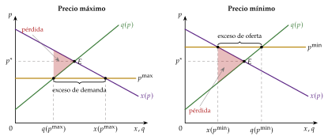
Fuente: elaboración propia a partir de Rodríguez Álvarez (2016) y Mas-Colell, Whinston y Green (1995, § 10.C).
D. Anexo: equilibrio parcial y equilibrio general
Idea: el equilibrio parcial no es una alternativa al general, sino un caso particular suyo: el de una economía con numerario y preferencias cuasilineales (Mas-Colell, Whinston y Green, 1995, § 10.B y § 10.C).
La economía completa: el consumidor \(i\) tiene una dotación de numerario \(\omega_i\) y participaciones \(\theta_{ij}\geq 0\) en los beneficios de las empresas, con \(\sum_i\theta_{ij}=1\); su renta es \(\overline{W}_i=\omega_i+\sum_j\theta_{ij}B_j\) (I.2). Con los precios \(p_n\) del numerario y \(p\) del bien, un equilibrio general es un par de precios y una asignación tales que
cada consumidor maximiza su utilidad sujeto a \(p_nn_i+p\,x_i=p_n\omega_i+\sum_j\theta_{ij}B_j\);
cada empresa maximiza su beneficio, \(B_j=p\,q_j-p_nC_j(q_j)\), con los costes en unidades de numerario;
se vacían los 2 mercados: \(\sum_ix_i=\sum_jq_j\) y \(\sum_in_i+\sum_jC_j(q_j)=\sum_i\omega_i\).
Normalización: si todos los precios se multiplican por la misma constante, ni los conjuntos presupuestarios ni las decisiones cambian, así que puede fijarse \(p_n=1\) sin pérdida de generalidad.
Ley de Walras: si todos los consumidores gastan su renta, el valor de lo demandado es igual al de lo disponible; si se vacía el mercado del bien, se vacía también el del numerario. Basta, pues, con estudiar el mercado del bien [ver tema 3.A.21].
El papel de la cuasilinealidad: la demanda del bien no depende de la renta, así que el reparto de las dotaciones y de los beneficios no afecta al mercado del bien. Su equilibrio se obtiene igual que en I.2, y el equilibrio parcial coincide con el general.
Cuándo usar cada enfoque: no es una cuestión de rigor, sino de grado de generalidad. El parcial basta cuando el mercado es pequeño en el gasto de los consumidores y está poco conectado con los demás, como en el análisis de una concentración en un sector concreto: sus efectos en otros mercados, a través de los factores, suelen ser mucho menores que en el propio. El general hace falta cuando una medida se transmite con fuerza a otros mercados, como un tratado comercial o un impuesto sobre el trabajo, que afecta a todos los bienes que se producen con él [ver tema 3.A.21].
Qué estudia cada tema del bloque
Este tema: la competencia perfecta en un mercado, con equilibrio parcial: demanda, oferta, equilibrio, ajuste, plazos y bienestar medido con excedentes.
Equilibrio general [ver tema 3.A.21]: la competencia perfecta en todos los mercados a la vez, como un sistema de ecuaciones simultáneas: excesos de demanda, ley de Walras, precios relativos que vacían todos los mercados, existencia, unicidad y tanteo multimercado.
Teoremas del bienestar [ver tema 3.A.22]: el óptimo de Pareto en general y los 2 teoremas fundamentales con todos sus supuestos, incluido el 2TFEB (con convexidad y el teorema del hiperplano separador), y el second best.
Fallos de mercado [ver tema 3.A.23]: cuando hay externalidades o bienes públicos, el equilibrio competitivo deja de ser eficiente.
Funciones de bienestar social [ver tema 3.A.24]: el óptimo que maximiza el bienestar social no tiene por qué coincidir con el que alcanza el mercado; elegir entre óptimos exige juicios de valor y es materia de la elección colectiva.
E. Anexo: el modelo de la telaraña
Este anexo desarrolla el modelo de II.1.3 con curvas lineales y 3 formas de formar las expectativas, y el caso no lineal del ciclo límite. La demanda es \(x_t=a_0-a_1p_t\) y la oferta, \(q_t=b_0+b_1p^e_t\), con \(a_1,b_1>0\) y \(a_0>b_0\), de modo que \(q'=b_1\) y \(\lvert x'\rvert=a_1\). Cada periodo el precio vacía el mercado, \(x_t=q_t\): \[p_t=\frac{a_0-b_0}{a_1}-\frac{b_1}{a_1}\,p^e_t. \tag{23}\] El equilibrio estacionario, en el que \(p_t=p^e_t=p^*\), es \(p^*=(a_0-b_0)/(a_1+b_1)\).
E.1. Expectativas ingenuas
Con \(p^e_t=p_{t-1}\), restando a (23) la misma ecuación en el estado estacionario, \(p^*=\frac{a_0-b_0}{a_1}-\frac{b_1}{a_1}p^*\), \[p_t-p^*=-\frac{b_1}{a_1}\,(p_{t-1}-p^*)\ \Longrightarrow\ p_t-p^*=\Big(-\frac{b_1}{a_1}\Big)^{t}(p_0-p^*)=\Big(-\frac{q'}{\lvert x'\rvert}\Big)^{t}(p_0-p^*).\]
El factor es negativo, así que la desviación cambia de signo cada periodo: el precio oscila. Su valor absoluto decide la convergencia:
si \(b_1<a_1\), \((b_1/a_1)^t\to 0\) y el precio converge;
si \(b_1=a_1\), oscila con amplitud constante;
si \(b_1>a_1\), la amplitud crece sin límite.
La cantidad, \(q_t=b_0+b_1p_{t-1}\), oscila con el mismo factor.
En el equilibrio, \(x^*=q^*\), \(\varepsilon_S=b_1p^*/q^*\) y \(\lvert\varepsilon_D\rvert=a_1p^*/x^*\), luego \(b_1/a_1=\varepsilon_S/\lvert\varepsilon_D\rvert\): el precio converge si la oferta es menos elástica que la demanda en el equilibrio. En el plano \((q,p)\) las pendientes son \(1/b_1\) (oferta) y \(-1/a_1\) (demanda): converge si la oferta es más inclinada.
∎
E.2. Expectativas adaptativas
Con \(p^e_t=p^e_{t-1}+\gamma\,(p_{t-1}-p^e_{t-1})\), \(0<\gamma\leq 1\) (Nerlove, 1958), los productores corrigen su previsión en una fracción \(\gamma\) del último error. Sustituyendo \(p_{t-1}\) por (23) en \(t-1\), \[p^e_t=(1-\gamma)\,p^e_{t-1}+\gamma\Big[\frac{a_0-b_0}{a_1}-\frac{b_1}{a_1}\,p^e_{t-1}\Big]=\gamma\,\frac{a_0-b_0}{a_1}+\Big[1-\gamma\Big(1+\frac{b_1}{a_1}\Big)\Big]\,p^e_{t-1}.\]
Es una ecuación en diferencias de primer orden con coeficiente \(\rho\equiv 1-\gamma(1+b_1/a_1)\) y punto fijo \(p^*\), que converge si \(\lvert\rho\rvert<1\). Como \(\gamma>0\) y \(b_1/a_1>0\), siempre \(\rho<1\), y \(\rho>-1\) si y solo si \(\gamma(1+b_1/a_1)<2\), es decir, \[\frac{b_1}{a_1}<\frac{2}{\gamma}-1.\]
Con \(\gamma=1\) (expectativas ingenuas) se recupera \(b_1<a_1\); con \(\gamma<1\) la zona de estabilidad es mayor, porque los productores reaccionan menos a cada precio. Si además \(\rho\geq 0\), la convergencia es monótona, sin oscilaciones. El precio sigue a la expectativa por (23).
∎
E.3. Expectativas racionales
Se añade a la demanda una perturbación imprevisible, \(x_t=a_0-a_1p_t+u_t\) con \(\mathbb{E}_{t-1}[u_t]=0\), y los productores esperan \(p^e_t=\mathbb{E}_{t-1}[p_t]\) (Muth, 1961). Del vaciado, \(p_t=(a_0-b_0-b_1p^e_t+u_t)/a_1\); tomando esperanzas en \(t-1\), \[p^e_t=\frac{a_0-b_0-b_1p^e_t}{a_1}\ \Longrightarrow\ p^e_t=\frac{a_0-b_0}{a_1+b_1}=p^*,\qquad p_t=p^*+\frac{u_t}{a_1}.\]
El precio solo se aparta del equilibrio por la perturbación del periodo, que nadie puede prever: no hay ciclo ni errores sistemáticos. Es el argumento con el que Muth critica la telaraña y propone las expectativas racionales [ver tema 3.A.6].
∎
E.4. Curvas no lineales: el ciclo límite
Con curvas no lineales, la condición de convergencia puede cumplirse lejos del equilibrio y no cerca de él. Si cerca del equilibrio la oferta es más plana que la demanda, las oscilaciones crecen al principio, como en la telaraña divergente; pero si lejos del equilibrio la oferta se vuelve más inclinada que la demanda, dejan de crecer.
El resultado es un ciclo límite: el precio y la cantidad acaban oscilando con una amplitud constante, que no depende del punto de partida (gráfico 18).
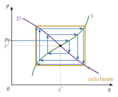
Fuente: elaboración propia a partir de Ezekiel (1938).
F. Anexo: aspectos para el test y preguntas del tribunal
Preguntas tipo test del primer ejercicio: simulador de test.
Con utilidad cuasilineal no hay efecto renta en el bien: la demanda marshalliana coincide con la hicksiana y el excedente del consumidor es una medida exacta del bienestar.
La oferta de la empresa competitiva es el coste marginal creciente por encima del mínimo del CVMe (corto plazo) o del CMe (largo plazo), no toda la curva de coste marginal.
Ajuste walrasiano: estable si \(z'(p^*)<0\). Ajuste marshalliano: estable si \(\frac{d}{dq}(p^D-p^S)<0\). Con las 2 curvas decrecientes y la oferta más plana que la demanda, Walras es inestable y Marshall, estable; con la oferta más inclinada, al revés.
Telaraña con expectativas ingenuas: converge si la oferta es menos elástica que la demanda en el equilibrio (\(\varepsilon_S<\lvert\varepsilon_D\rvert\)), es decir, más inclinada en el plano \((q,p)\). Con curvas normales puede divergir. Autores:
Kaldor le dio nombre (1934);
Ezekiel (1938) lo sistematizó;
Nerlove (1958), expectativas adaptativas;
Muth (1961), racionales.
Ley de Dalton: el impuesto recae más sobre el lado más inelástico. Con la demanda perfectamente elástica lo soportan entero los vendedores; con la oferta perfectamente elástica, los compradores. La incidencia no depende de quién lo pague legalmente.
El exceso de gravamen crece con el cuadrado del impuesto: \(\mathrm{EG}\approx\tfrac12t^2\frac{x}{p}\frac{\varepsilon_S\lvert\varepsilon_D\rvert}{\varepsilon_S+\lvert\varepsilon_D\rvert}\).
Libre entrada:
con rendimientos constantes, \(p^*=c\) y número de empresas indeterminado;
con rendimientos decrecientes en todo el dominio, no hay equilibrio;
con coste medio en U, \(p^*=\min\mathrm{CMe}\) y \(J^*=x(\overline{c})/\overline{q}\).
La forma de S invertida de los costes es condición suficiente, no necesaria.
Industria de costes crecientes (deseconomías externas): oferta a largo plazo creciente; de costes decrecientes (economías externas): decreciente. Nunca por rendimientos crecientes internos, incompatibles con la competencia perfecta.
El 1TFEB no necesita convexidad; el 2TFEB, sí (en general). En equilibrio parcial, todos los óptimos tienen las mismas cantidades.
Fechas de los precursores:
Dupuit (1844), no 1884;
Jenkin (1870) dibuja las primeras curvas de oferta y demanda en inglés;
Marshall (1890) sistematiza el equilibrio parcial.
Preguntas probables del tribunal
¿Por qué se usa la utilidad cuasilineal en equilibrio parcial? ¿Qué se pierde con ella?
¿Por qué la oferta de la empresa no es toda la curva de coste marginal? ¿Qué cambia entre el corto y el largo plazo?
¿Son compatibles las economías de escala con la competencia perfecta?
¿Por qué los ajustes walrasiano y marshalliano pueden dar resultados distintos? ¿Cuándo?
¿Qué dice la crítica de Muth a la telaraña?
¿Por qué el excedente total mide el bienestar? ¿Qué supuestos del 1TFEB no hacen falta?
¿Quién paga un impuesto unitario si la demanda es perfectamente inelástica? ¿Y si lo es la oferta?
¿Por qué puede no existir equilibrio a largo plazo con libre entrada y rendimientos decrecientes?
¿Qué diferencia hay entre economías externas pecuniarias y tecnológicas? ¿Cuáles causan ineficiencia?
Bibliografía
Es un método muy extendido en las ciencias sociales: sostiene que los fenómenos sociales, su estructura y sus cambios, se explican en principio a partir de los individuos, de sus metas, sus creencias y sus acciones, y ve la evolución de la sociedad como el agregado de las decisiones de los particulares. Es, por tanto, un reduccionismo: explica las entidades grandes a partir de las pequeñas.↩︎
La microeconomía contemporánea considera esta separación estricta entre consumidores y productores una simplificación excesiva (Ekelund y Hébert, 2014, cap. 26): lo muestran las «tecnologías del consumo», como el enfoque de características de Kelvin Lancaster (1966), la producción doméstica de Gary Becker (1965) y de Reuben Gronau (1977) o la economía de la información de George J. Stigler (1961), en la que conocer los precios y las calidades exige una búsqueda costosa que se combina con el bien físico. La microeconomía estudia también otros agentes, como el sector público o las instituciones financieras.↩︎
La clasificación en 4 estructuras es una simplificación expositiva [ver tema 3.A.17] [ver tema 3.A.18] [ver tema 3.A.19]. Hay otras, como las plataformas, en las que la utilidad de cada usuario aumenta con el número de usuarios (efectos de red).↩︎
Al relajar el supuesto 2 se llega a la economía de la información [ver tema 3.A.13].↩︎
La expresión la usaban ya en el siglo XVI los escolásticos de la Escuela de Salamanca: Luis de Molina, en su tratado sobre el dinero (tomo II de De iustitia et iure, 1597), la emplea al explicar que el dinero vale más donde escasea y que entonces, ceteris paribus, con la misma cantidad se compran más cosas (Molina, 1597). Otro escolástico, Martín de Azpilcueta, había relacionado en 1556 la abundancia de dinero con su menor valor, 12 años antes que el francés Jean Bodin (Azpilcueta, 1556; Bodin, 1568): en las tierras donde falta dinero, las mercancías y el trabajo se dan por menos que donde abunda, como se veía al comparar Francia con la España que recibía la plata de América. La cláusula la popularizó en economía Marshall (1890) con su método del equilibrio parcial.↩︎
La dotación puede proceder de vender otros bienes o el trabajo a precios que no cambian con lo que pase en este mercado, y de los beneficios de las empresas. Con utilidad cuasilineal, ni su cuantía ni su reparto afectan a la demanda del bien (anexo D).↩︎
Se admite que el consumo de numerario sea negativo para evitar soluciones de esquina en el numerario (Mas-Colell, Whinston y Green, 1995, § 10.C).↩︎
La utilidad \(U_i\) es estrictamente cuasicóncava (curvas de indiferencia estrictamente convexas), y \(\phi_i\), que solo depende de \(x_i\), estrictamente cóncava: la utilidad marginal del bien es decreciente. Aquí tiene sentido decirlo porque, al medir la utilidad en unidades de numerario, \(\phi_i'(x_i)\) es observable: es lo máximo que el consumidor pagaría por una unidad más.↩︎
Con el lagrangiano \(\mathcal{L}=n_i+\phi_i(x_i)+\lambda\,(\overline{W}_i-n_i-p\,x_i)\): \(\partial\mathcal{L}/\partial n_i=1-\lambda=0\) y \(\partial\mathcal{L}/\partial x_i=\phi_i'(x_i)-\lambda p=0\), luego \(\lambda=1\) y \(\phi_i'(x_i)=p\): la utilidad marginal de la renta es constante e igual a 1. Estos problemas se resuelven con las condiciones de Kuhn-Tucker, que distinguen soluciones interiores y de esquina [ver tema 3.A.8]: si \(\phi_i'(0)\leq p\), el consumidor no compra el bien, \(x_i=0\).↩︎
Con varios bienes no numerarios y utilidad cuasilineal, como en muchos modelos de diferenciación de productos, la demanda de cada uno depende de todos sus precios, pero sigue sin efecto renta [ver tema 3.A.18].↩︎
Para sumar las demandas basta con que cada consumidor tome el precio como dado: la suma siempre existe, y así las propiedades de la demanda agregada tienen un fundamento individual y no son ad hoc. El problema de la agregación es otro: que la demanda de mercado dependa solo de los precios y de la renta total, no de su reparto, para poder tratarla como la de un consumidor representativo. Eso exige que todos los consumidores tengan el mismo efecto renta (curvas de Engel lineales y paralelas): la condición necesaria y suficiente es que la función indirecta de utilidad de cada uno admita la forma polar de Gorman, \(V_i(\vec{p},\overline{W}_i)=a_i(\vec{p})+b(\vec{p})\,\overline{W}_i\), con el mismo \(b(\vec{p})\) para todos (Gorman, 1953, 1961) [ver tema 3.A.8]. Las preferencias cuasilineales respecto al mismo numerario son un caso particular (\(b=1\)), como las homotéticas idénticas (por ejemplo, la misma CES para todos): son condiciones suficientes, no necesarias.↩︎
La función de costes es la función de valor de la minimización del coste, \(C_j(\vec{w},q)=\min_{\vec{z}}\{\vec{w}\cdot\vec{z}:F_j(\vec{z})\geq q\}\). Sus propiedades como función de \(\vec{w}\) (homogénea de grado 1, cóncava, lema de Shephard) son materia de la dualidad [ver tema 3.A.12]; aquí solo importa su forma como función de \(q\).↩︎
Para que el problema del beneficio tenga solución basta la concavidad de \(F_j\) (rendimientos no crecientes); para que exista la función de costes, su cuasiconcavidad, y la concavidad estricta da además una oferta única y continua [ver tema 3.A.12]. Con rendimientos crecientes en todo el dominio, el problema de la empresa precio-aceptante no tiene solución: siempre ganaría más produciendo más. Con rendimientos constantes, el tamaño de la empresa queda indeterminado (III.3). No hay que confundir 2 propiedades: la convexidad de \(C_j\) (coste marginal creciente) y las deseconomías de escala (coste medio creciente, \(\mathrm{CMg}>\mathrm{CMe}\)). Una función de producción cóncava da costes convexos, pero no al revés: con el coste medio en U, en el tramo de economías de escala el coste marginal ya puede estar subiendo. En la combinación de mínimo coste, la relación exacta es \(\varepsilon_{q,\lambda}=\mathrm{CMe}/\mathrm{CMg}\) para cualquier tecnología [ver tema 3.A.12].↩︎
La oferta no tiene efecto renta: la empresa no tiene restricción presupuestaria, y cuando cambia el precio solo hay efecto sustitución. Por eso su oferta es siempre no decreciente en el precio (ley de la oferta) [ver tema 3.A.12] y la de mercado hereda las propiedades de las individuales: aquí la agregación no plantea problemas. Se supone, eso sí, un mercado de capitales perfecto, en el que la empresa puede financiar la producción que quiera; con restricciones de crédito, como las que sufren muchas pymes, la oferta dependería también de su riqueza.↩︎
El argumento parece contradecir que los agentes sean precio-aceptantes, porque supone que pueden cambiar el precio. No es así: siempre pueden ofrecer otro precio (salvo que haya precios máximos o mínimos), pero en el equilibrio no tienen ningún interés en hacerlo. A ese precio los consumidores compran lo que quieren y no ganan nada ofreciendo más, y las empresas venden lo que quieren y no ganan nada cobrando menos.↩︎
Walras no habla de un subastador, sino de precios que «se vocean» (on y crie) y se corrigen por tanteo (tâtonnement) (Walras, 1874, § 126); la figura del subastador es posterior. Tras las críticas de Bertrand (1883) y Edgeworth, en la 4.ª edición de los Éléments (1900) el tanteo pasa a hacerse con compromisos escritos (bons) que solo se ejecutan en el equilibrio (Walker, 1987). La idea de un mecanismo que lleva los precios de mercado a los «naturales» está ya en Smith (1776, lib. I, cap. VII). La historia completa del tanteo y su generalización a todos los mercados son del equilibrio general [ver tema 3.A.21].↩︎
Es un caso de ajuste lento (sluggishness): la producción de cada periodo ya está decidida, de modo que ante una perturbación la oferta solo puede reaccionar un periodo después, y responde al precio pasado, no al presente.↩︎
Lo formaliza Marshall (1890), que le da el nombre de excedente del consumidor (libro III, cap. VI), pero ya lo había propuesto el ingeniero francés Jules Dupuit (1844) para medir la utilidad de un puente o de una carretera [ver tema 3.A.9].↩︎
Para la empresa \(j\), \(\mathrm{EP}_j=p\,q_j-\mathrm{CV}_j(q_j)\) y \(B_j=p\,q_j-\mathrm{CV}_j(q_j)-\mathrm{CF}_j\), luego \(\mathrm{EP}_j=B_j+\mathrm{CF}_j\). Sin costes fijos coinciden.↩︎
Por eso el modelo cuasilineal justifica usar el excedente total como medida del bienestar en el análisis coste-beneficio. Si una medida de política económica aumenta el excedente total, los que ganan podrían compensar a los que pierden y aún les sobraría: es una mejora potencial en el sentido de Pareto, el principio de compensación. En general, ese principio no permite comparar 2 fronteras de posibilidades de utilidad que se cortan; con utilidad cuasilineal sí, porque todas son rectas paralelas de pendiente \(-1\), y el principio equivale a maximizar la suma de las utilidades, es decir, el excedente total.↩︎
Las condiciones marginales del óptimo las formulan Lerner (1934) y Lange (1942), en el debate sobre el cálculo económico en el socialismo; la demostración moderna de los 2 teoremas se debe a Arrow (1951) y Debreu (1951), por separado [ver tema 3.A.22].↩︎
Con externalidades, la demanda inversa y el coste marginal de la industria solo recogen los beneficios y costes privados, que no coinciden con los sociales. Con poder de mercado, los agentes saben que sus decisiones mueven el precio, y el precio que pagan los consumidores deja de igualar al coste marginal. En ambos casos el equilibrio no agota las ganancias de bienestar posibles.↩︎
No se consideran cambios en los precios de los demás bienes, que el numerario resume con precio 1, ni en la renta, que no desplaza la demanda porque no hay efecto renta.↩︎
Jenkin (1872) ya había analizado la incidencia de los impuestos con curvas de oferta y demanda.↩︎
Una cuasirrenta es lo que obtiene a corto plazo un factor fijo por encima de lo necesario para mantenerlo en uso: como no puede aumentar su cantidad, el aumento de la demanda sube su remuneración. Desaparece a largo plazo, cuando todos los factores pueden ajustarse y entran más; de ahí su nombre, renta solo a corto plazo (Marshall, 1890, lib. V, caps. VIII y IX). Es el excedente del productor a corto plazo: ingresos menos costes variables.↩︎
Por eso la distinción entre corto y largo plazo no es contable, sino de qué costes pueden evitarse. Los costes se miden como costes de oportunidad (tabla 4), y el de un factor fijo que no puede venderse ni alquilarse es nulo a corto plazo: lo irrelevante para la decisión son los costes hundidos. Con ese criterio la regla es la misma en los 2 plazos: producir donde \(p=\mathrm{CMg}\) si el precio cubre el coste medio evitable. Pero los plazos no son equivalentes: cambia qué costes son evitables (a largo plazo, todos), la forma de los costes (con un factor fijo el coste marginal es más inclinado) y, con libre entrada, el número de empresas.↩︎
Solo con costes lineales caben equilibrios con distintos números de empresas y producciones individuales, todos equivalentes en excedente del consumidor y en beneficio de cada empresa.↩︎
Se supone que la demanda es positiva al precio mínimo que aceptan las empresas, \(x(c)>0\); si no, el equilibrio es sin intercambio (II.1.2).↩︎
La maximización del beneficio iguala el precio al coste marginal, y la libre entrada, al coste medio; como solo coinciden en el mínimo del coste medio, que aquí está en \(q\to 0\), las 2 condiciones a la vez exigen producciones individuales nulas. La intuición: la escala más eficiente es infinitesimal, y lo eficiente sería que infinitas empresas produjeran cada una casi nada.↩︎
Ocurre si los costes totales tienen forma de S invertida, primero cóncavos y después convexos (la tecnología «en S», con rendimientos crecientes y luego decrecientes [ver tema 3.A.11]), o si hay un coste fijo evitable \(K>0\) y costes variables convexos, \(C(q)=K+\psi(q)\) para \(q>0\) y \(C(0)=0\) (Mas-Colell, Whinston y Green, 1995, § 10.F). Cualquiera de las 2 basta: la forma de S invertida de los costes totales es una condición suficiente, no necesaria, para que haya competencia perfecta a largo plazo.↩︎
Con preferencias monótonas, cada óptimo de Pareto es solución de este problema para algún vector de utilidades de los demás consumidores, y cada solución es un óptimo.↩︎